生成时间：2026-10-05T11:27:31+08:00
今日保留论文数：15
内容构成：今日新文 15 篇；补充推荐 0 篇；经典旧文精读 0 篇
阅读分层：重点精读 4 篇；相关简报 11 篇。精读依据科学贡献筛选，简报保留方法、结论及局限。
数据源警告
- 本次有 6 个数据源访问异常；完整错误已保留在运行日志中，日报只显示摘要。
- arXiv API：4 个分类访问异常，候选池可能不完整；程序会基于已成功获取的数据继续兜底。
- 其他来源：2 个异常。
- 主要错误类型：限流 4 次；超时 1 次；其他 1 次。
高能天体物理重点
1. Candidate X-ray Counterparts of Ultra-High-Energy Emission of the Galactic Microquasar V4641 Sgr Revealed by Einstein Probe
- 来源：arXiv / astro-ph.HE
- 链接：https://arxiv.org/abs/2610.02962
- 作者：Yi-Heng Chi, Shao-Qiang Xi, Ping Zhou, Hua Feng, Ruo-Yu Liu, Songzhan Chen, Naomi Tsuji, Caterina Tresoldi
- 公告 / 来源日期：2026-10-05
- 阅读层级：重点精读
- 评分：novelty 8/10，importance 8/10，relevance 10/10，final 9.70/10
- 推荐理由：EP弥散X射线提供新的PeVatron多波段约束；热模型仍可行，磁场依赖伽马分区和轻子假设。
中文题目：爱因斯坦探针发现V4641 Sgr扩展X射线候选：弱磁场结论依赖单区轻子解释
做了什么：V4641 Sgr周围已发现延伸至0.8 PeV的伽马射线，但究竟是电子逆康普顿散射还是质子碰撞，仍缺少能区分机制的多波段信息。作者用爱因斯坦探针的后随X射线望远镜FXT，在2025—2026年累计约64 ks观测中去除点源、建模天空背景，找到北侧n1及南侧s1、s2三个弥散增强区。它们距双星约20—40 pc，与部分TeV发射区重叠；0.5—8 keV去吸收流量分别约2.42、1.17、0.89×10⁻¹³ erg s⁻¹ cm⁻²。
用同一电子群产生X射线同步辐射和伽马逆康普顿辐射，并按H.E.S.S.形态把伽马流量缩放到X射线孔径后，作者得到约1—2 μG磁场。这是给定空间模板、粒子谱和轻子占比下的条件估计。热模型在FXT统计量下仍不能排除，南侧结构也可能含背景星系群；文章没有确认质子PeVatron、发现中微子或唯一确定加速位置。
为什么重要：新的X射线空间信息使讨论从“有PeV光子”推进到“哪些区域含高能电子、当地磁场可能多大”。电子在弱磁场中冷却较慢，可以传播到较远的伽马区域，因而为大尺度辐射提供可检验的轻子解释。但形态接近不是同源概率，少量X射线也可以来自强磁场中的较少电子，判断重子份额仍需气体、能量预算和中微子约束。
理论 / 观测 / 仪器方法价值：可借鉴的是把背景处理和空间匹配放在能谱拟合之前：先用静默期减弱中央点源污染，分别处理仪器背景与天空背景，再用伽马二维形态计算各X射线孔径所覆盖的流量份额。此法比直接把整个伽马源与一个X射线结团配对更合理，却依赖TeV形态能外推到PeV、电子在两波段共享空间分布等假设。
为什么应该关注：这直接关系到微类星体是否供应银河高能宇宙线，以及未来IACT精细形态与中微子检验怎样配合。最有价值的后续是确认结团确为弥散非热辐射，测量谱随位置的变化，并同时拟合输运和磁场。本文与同日XMM论文是协调发表、共享伽马资料的互补观测，不能把两次建模当成完全独立的物理机制确认。
展开详细解读：文章讲解、背景、理论、重点章节、图表与相关工作
文章详细讲解
科学问题
微类星体通过吸积驱动喷流，把能量带到双星以外。V4641 Sgr的伽马源远大于中央双星，单靠伽马谱无法判断母粒子种类、加速发生在喷流末端还是靠近中心，也不能分开电子数量与磁场强度。本文寻找空间上对应的同步辐射候选，以增加一个对磁场敏感的观测量。
作者怎么做
FXT覆盖约1.6°×1.1°区域。作者用帧存储区事件估计粒子背景，再以9—11 keV计数重标定；对图像做曝光、渐晕校正，检测并填补点源后查看弥散结构。谱分析则分开源区与邻近天空区，折叠响应后拟合吸收幂律，并检验热等离子体模型。最后用已有H.E.S.S.、HAWC和LHAASO光谱约束电子群，把X射线用于推断磁场。
关键结果
n1和s1典型角尺度约4′×8′，在6.2 kpc处约7.2×14.4 pc；三个结团的幂律光子指数约1.7、2.1和3.0。谱支持非热解释，但FXT的热模型与幂律无法在统计上区分。弱X射线相对强伽马的比例，在纯轻子单区设定下偏向微高斯量级磁场；附近无明显X射线的区域也可能有更低场或不同电子分布。
局限和下一步
s1、s2与背景天体的偶然重叠尚未排除，n1端点PS1的身份也未确立。磁场估计依赖伽马孔径分配；南侧图4图注给1.5 μG而正文给1.2 μG，本文按约1—2 μG范围报告，不消除原文差异。冷却时间不等号在正文与附录也不一致，应回到“最大允许场对应最短冷却时间”的物理条件理解，等待后续统一空间模型和更高分辨率观测。
关键结果是怎么做出来的
第一步控制中央源污染。17次FXT观测跨2025年秋季与2026年春季，两个模块各约64 ks；n1实际主要由2025年的约22 ks观测覆盖。WXT监测没有发现足以主导这些弥散结构的中央强爆发。全视场计数率和截止刚度检查支持观测背景平稳，但不能替代局部天空背景模型。
第二步选能段并检查空间重合。1—5 keV既避开软段银河热前景，又减少5 keV以上仪器粒子背景。去点源图给出n1、s1、s2，n1与北侧TeV源重叠较好；南侧结构与HAWC/LHAASO中心并不完全一致，最南的高于250 TeV区域也没有对应X射线增强。不能把选择出的三个亮结团当成全视场全部结构。
第三步在响应空间拟合。源谱每箱至少20计数，用χ²统计；吸收柱固定为2×10²¹ cm⁻²，避免微弱信号同时拟合吸收与谱斜率的退化。表1列的是1σ参数误差，另外计算的5σ流量下界仍高于零，说明相对于所选局部背景有明显超额。这不是对整个天空搜索试验因子校正后的同源发现显著性。
第四步检验竞争辐射。热apec模型的温度90%下限分别为3.2、2.7、1.5 keV，较SS433相关气体高，却不能在本数据中统计排除。作者以距双星较远、热维持困难作为物理理由支持非热解释；这与真正检测到谱线或拒绝热模型不同。
第五步把亮结团与大孔径区分。D1/D2没有合适的离源天空区，扣仪器背景后的非热项还含宇宙和银河背景；减去预计宇宙X射线背景后约6.4和10.3×10⁻¹³ erg s⁻¹ cm⁻²，仍只作保守上限。孔径流量分别取伽马高斯模板的39%、15%或8%，与结团真实电子空间分布未必相同。
第六步才推论输运和供能。假定B=2 μG及所列光子场，PeV电子的冷却尺度约3 kyr；若它们从中心走到约150 pc，需要较快扩散。作者的4.6×10⁴⁷ erg电子总能量和约5×10³⁶ erg/s供能估计提示长期历史活动的重要性，当前中央X射线低亮度不能直接代表千年平均喷流功率。
展开背景、理论、公式、模型和章节导读
背景知识
PeVatron指能把粒子加速到约10¹⁵ eV的天体系统。高于100 TeV的光子是极端粒子的线索，但母粒子可以是电子或质子；“看见PeV伽马”不自动等同“确认银河质子膝区来源”。微类星体把恒星质量致密天体吸积与相对论喷流联系起来，是超新星遗迹和脉冲星风云之外的重要候选。
电子在磁场中产生同步辐射，也可把低能背景光子逆康普顿散射到伽马能区。同一电子群的两种辐射对磁场和光子场依赖不同，所以X射线与伽马比例能约束磁场。不过不同能段未必选择同样能量的电子，尤其PeV电子散射进入克莱因—仁科区后，简单能量密度比关系不再精确。
质子通过与环境气体碰撞产生中性介子伽马和带电介子链中的中微子、次级电子。稀薄气体意味着碰撞效率低，为给定伽马亮度需更多质子能量。V4641 Sgr位于银河盘外约520 pc，低密度和弱有序场都可能合理，但实际气体柱、填充因子和历史注入还需观测，不能只用位置作排除依据。
X射线望远镜的“弥散”图像可能混有未分辨点源、中央亮源散射翼、尘埃晕和银河前景。静默期观测、点源掩膜与局部背景相互补充。SS433有成熟的X射线和TeV喷流结构可供比较，但两源场强、环境与供能不同，因此相似形态只提供机制线索。
基础理论 / 方法脉络
能谱拟合首先在粒子层提出电子分布，再通过辐射核卷积成光子谱。本文用指数的平方形成超指数截止，其斜率α为电子谱指数，不能和X射线光子指数Γ混用。北侧α=2.0、截止800 TeV，南侧α=2.2、截止900 TeV；这些参数刻画当前稳态谱，不是直接测出的注入历史。
磁场提高时，同能量电子的同步辐射功率和特征频率都增加。若伽马谱已固定电子数量，较小X射线通量便偏向较低B；若伽马中有重子成分，产生逆康普顿辐射所需的电子变少，同一X射线可允许更强B。这是物理退化，不是由减小谱拟合误差就能消除的问题。
空间缩放连接两个仪器的不同分辨率。二维高斯的1σ椭圆只包含约39%总通量，不能当成68%；作者据H.E.S.S.模板把北n1和南s1+s2分别配上15%与8%的伽马光子。假定从TeV到PeV形态不变，是整个弱磁场推断的一部分，今后的能量依赖形态可以直接检验。
冷却和输运决定高能电子能到哪里。扩散长度随扩散系数和生存时间的平方根增加；同步冷却随B²和电子能量增加而加快。本文最大允许B对应最短冷却时间，因此以3 kyr代入得到的是特定保守场设定下的所需输运尺度，不能脱离B假设宣称普适扩散下限。
公式与推导
以下以附录D—E及§IV.3为骨架；同步辐射和扩散标准关系标为教学补充，没有重做作者数值拟合。
- 原文D1给出电子谱：
\(E_e\)、E_c须用一致能量单位，K决定电子总量。把此谱与辐射核积分，才能连接观测，不能仅把截止能当成光子截止。
- 原文给出同步特征能量：
因此微高斯场中的keV辐射选择约百TeV电子，和TeV—PeV伽马资料有相关母粒子范围；精确谱仍需完整同步核。
- 教学用Thomson极限连接辐射功率：
γ=E_e/(m_ec²)，U为能量密度。只在散射处于Thomson区且比较同一电子时功率比等于能量密度比；本文PeV段必须用含克莱因—仁科抑制的数值核。
- 对无截止附近的幂律电子，本文使用的同步标度为：
第二式是固定光子场与谱形时的教学比例，f_γ是分配到X射线区的轻子伽马份额；不是可跨不同能段直接代数拟合的精确等式。份额越小，允许场越高。
- 原文用GAMERA计算两过程冷却；教学定义为：
B=2 μG时原文用约3 kyr(E_e/PeV)⁻⁰·⁷⁵拟合。附录称这是最短冷却时间，而正文写了相反方向的不等号，本解读保留条件，不沿用有歧义的界限符号。
- 采用文中投影扩散尺度约定：
取l约150 pc、t约3 kyr给D约6×10²⁹ cm²/s。若实际场更弱、冷却更慢，所需D可更小；各向异性输运或中途再加速也改变解释。
- 供能数量级由能量库存除以寿命得到：
W_e约4.6×10⁴⁷ erg来自两区电子谱积分。用PeV冷却时间代表整体库存是量级估计，并非完整时变注入反演。
模型拟合 / 应用方法
X射线模型是TBabs乘幂律，天空背景另以局部未吸收热气体、吸收热气体和未分辨背景幂律组合。背景先在邻区拟合，再按源区响应和面积使用。吸收柱固定、背景冻结会减少自由度，但其空间变化可能超出形式误差；这也是不能把表1的1σ误差当作全部不确定性的原因。
D1/D2大区缺离源背景，非热项仍含天空贡献。作者列出原始值和扣预期宇宙背景值，却未排除银河脊弥散辐射，故只能作为X射线上限。n1等局部背景扣除通量与这些上限不能混用，否则会把背景误认为电子同步辐射并抬高场估计。
伽马模型采用CMB及30 K、0.5 eV/cm³的远红外灰体场。HAWC和H.E.S.S.各区谱结合LHAASO总谱，但LHAASO被假定南北各占一半；这是依据两侧相似性的分配，不是LHAASO独立测出的半份谱。各孔径缩放沿H.E.S.S.椭圆高斯形态，不能忽略能量和空间相关性。
最终约1—2 μG体现模型允许范围，表4电子谱参数没有完整协方差或联合后验。图4南侧蓝线1.5 μG与正文1.2 μG须并列记录；它们不支持报到小数位的“精确场测量”。真正可比较的后续拟合需统一X射线区域、伽马形态、粒子截止形式与空间输运，再评估轻子/重子混合。
重点章节 / 结果段落怎么读
-
§II与附录A：先看17次观测覆盖，尤其n1只使用北侧2025年数据，避免把64 ks误用于所有区域。
-
§III、图1—2和表1：连读去点源形态、局部背景与谱参数，区分超额存在和辐射机制唯一性。
-
附录C：PS1的黑体/幂律和射电形态没有确认脉冲星，不能把n1直接命名为脉冲星风云。
-
§IV.2与附录D：核对各孔径39%、15%、8%的伽马份额，再比较磁场。
-
§IV.3与附录E：注意冷却界限符号冲突及供能估计的历史活动假设。
关键图表与解读
图1
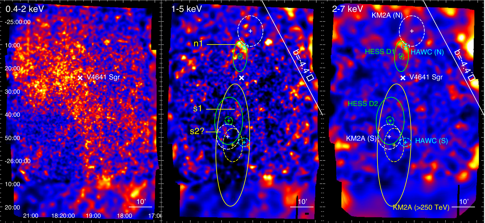
图注：去除点状源后，扣背景、校正渐晕并作自适应平滑的FXT图像：左、中、右依次为0.4—2、1—5、2—7 keV。中图标出弥散X射线结构n1、s1、s2。HAWC高于1 TeV、LHAASO/KM2A高于25 TeV（原研究双点源方案）、KM2A高于250 TeV和H.E.S.S.的0.8—22 TeV源依次用青、白、黄、绿标记；H.E.S.S.采用模型D，也是D1/D2提谱所用模型。加号标源中心，虚线为中心位置误差，实线为1σ延伸尺度；白色叉号为V4641 Sgr。
怎么看这张图：先看中图结团与伽马轮廓的相对位置；南部并非所有伽马亮区都有X射线对应。不同仪器的轮廓并不是同一置信口径，不能据叠图直接给出关联显著性。 核心空间对应证据，保留三个能段。
来源与置信度：arXiv HTML；source verified；https://arxiv.org/html/2610.02962v1/x+gam.png
图4
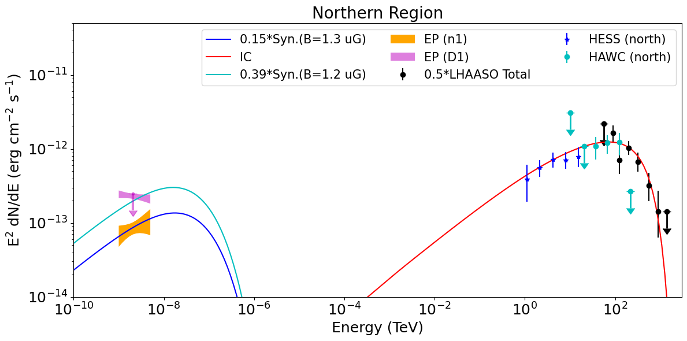
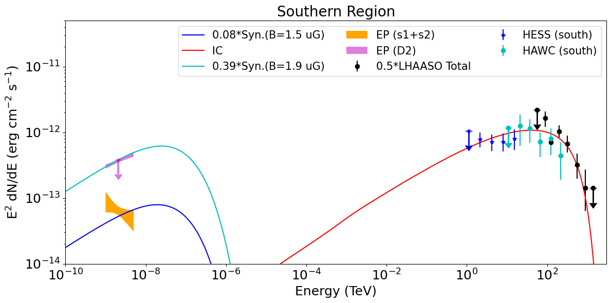
图注：基于伽马射线和X射线测量的轻子辐射模型。上图为V4641 Sgr北区多波段谱：青线表示D1区域宇宙线电子在B=1.2 μG时的同步辐射，蓝线表示n1电子在B=1.3 μG时的同步辐射。下图为南区：青线对应D2电子、B=1.9 μG，蓝线对应s1+s2电子、B=1.5 μG。
怎么看这张图：这张图把已由伽马谱约束的电子与X射线磁场响应联系起来。南侧蓝线的原图注是1.5 μG，而正文写1.2 μG；保留这一差异。各区域伽马份额和单区轻子假设须一起阅读。 磁场推断的直接多波段证据。
来源与置信度：arXiv HTML；source verified；https://arxiv.org/html/2610.02962v1/sed_north.png；https://arxiv.org/html/2610.02962v1/sed_south.png
强相关工作
本文直接引用H.E.S.S.对V4641 Sgr的研究（DOI:10.1051/0004-6361/202557532），借用其双源空间模板和光谱；它们是共同输入，非本文重新测量。与同日已核读的XMM研究2610.02966相比，FXT覆盖更广并报告s2候选，XMM则更细致控制点源与局部背景。两篇的空间填充假设不同，因此场强数值不宜直接平均。
原文引用Suzuki等XRISM研究（DOI:10.3847/2041-8213/ad9d11）及Chi等SS433壳层工作（DOI:10.3847/2041-8213/ad84ed）。这里核对了引用身份和本文如何使用，未重新分析前作数据。XRISM在爆发后受中央源与未分辨源污染；SS433只是相似喷流环境的比较基线，不能预设V4641也有同样热壳或电子冷却长度。
同一事件 / 同类源线索：
相似工作：
基础理论 / 方法工作：
相反观点 / 张力线索：
（未提供）
2. XMM-Newton Resolves Parsec-scale X-ray Jets in the PeVatron Microquasar V4641 Sgr
- 来源：arXiv / astro-ph.HE
- 链接：https://arxiv.org/abs/2610.02966
- 作者：Naomi Tsuji, Caterina Tresoldi, Kaya Mori, Hiromasa Suzuki, Matthew Lundy, Dmitry Khangulyan, Samar Safi-Harb, Laura Olivera-Nieto
- 公告 / 来源日期：2026-10-05
- 阅读层级：重点精读
- 评分：novelty 8/10，importance 8/10，relevance 10/10，final 9.70/10
- 推荐理由：XMM分辨V4641两侧pc级结团，统计与背景系统误差并列，是高能微类星体新的形态证据。
中文题目：XMM分辨V4641 Sgr两侧X射线结团：加速区还是磁场增强的下游？
做了什么：作者在V4641 Sgr静默期用XMM-Newton进行四个指向观测，在去掉大量点源后，分辨出北侧n1和南侧s1扩展X射线结构，距中央双星约23和25 pc。它们落在TeV辐射范围内，与射电喷流方向大致一致，仍分别偏离约16°和10°。n1、s1的幂律光子指数约1.9和1.8，2—10 keV通量约数×10⁻¹³ erg s⁻¹ cm⁻²；背景、吸收和能段选择带来约30%的变化，超过部分形式统计误差。
作者把X射线结团视为伽马大区域内的小体积，按体积填充因子缩放逆康普顿谱，得到结团磁场约3—5 μG；结团之外的X射线上限则对应约1—2 μG或更低场。局部加速、下游磁场增强、慢扩散都仍可能，重子或混合起源也未被排除。数据确认的是扩展结构及其谱约束，不能直接把亮结团定为已经测明的PeV加速位置。
为什么重要：与只观测爆发中央源相比，静默期对偏离中心的大区域成像揭示了此前可能被淹没的微弱结构。X射线比伽马更紧致，给出了空间分区的实质线索：整个伽马源未必只有一个均匀磁场。新形态可帮助区分粒子在那里被加速、在那里辐射，还是在那里遇到更强磁场，这三件事在图像上并不等价。
理论 / 观测 / 仪器方法价值：方法价值在于同时报告源掩膜、仪器背景、有效曝光、响应和系统误差，并显式加入体积份额。它提醒联合多仪器建模时，必须先定义“同一地区”的含义，再比较同步与逆康普顿通量。填充因子由二维尺寸加假设视线深度推得，属于模型输入范围，不能当成三维直接测量。
为什么应该关注：V4641 Sgr是连接微类星体喷流、超高能伽马及潜在中微子产额的重要源。对于IACT与未来CTAO，能量依赖伽马形态能检验两侧结团和大尺度电子是否同源；对X射线，Chandra需检查未分辨源，NuSTAR可延伸硬谱。现在不宜据3—5 μG单一数值排除重子分量，也不能把作者计划中的观测写成已经完成。
展开详细解读：文章讲解、背景、理论、重点章节、图表与相关工作
文章详细讲解
科学问题
PeV伽马辐射覆盖近度尺度，而中央喷流的射电证据处于角秒尺度，中间缺少直接定位粒子和磁场的观测。本文要回答是否存在十几至几十pc尺度的X射线结团，它们是否处于伽马瓣内，以及X射线更紧致的原因究竟是加速、输运还是磁场结构。
作者怎么做
作者用2025年9月四次XMM观测，将MOS1、MOS2、PN数据校准并筛除软质子耀发，扣滤轮关闭背景，生成曝光校正镶嵌图。点源通过多能段最大似然检测，其掩膜延伸到PSF贡献只剩局部背景的10%。谱用相邻离源区扣背景，合并拟合各探测器，屏蔽仪器荧光线；宽带模型再区分亮结团和无明显X射线的伽马区域。
关键结果
n1在两次独立指向中出现，两个结团的幂律谱与轻子同步辐射相容，n1所试热模型明显较差。结团场约3—5 μG，而外部区域约不高于1—2 μG，提示磁场非均匀性。若结团是快喷流中的加速区，平流往往比冷却快，结团尺寸不能简单解释成冷却长度；若是冷却受限扩散区，则要求很慢整体流速和接近Bohm的扩散。
局限和下一步
二维亮度结构可能受平滑、投影和未分辨点源影响，关联尚非唯一。表1中n1流量3.5×10⁻¹³而正文写4.0×10⁻¹³，均标类似统计误差，本稿保留“约数×10⁻¹³”和两种出处。谱显著性是所设源模型比较，未给全视场试验校正；要判定真实弥散和非热性质仍需Chandra、NuSTAR和包含空间输运的模型。
关键结果是怎么做出来的
先选静默期降低系统污染。Swift在9月6日的短暴露给中央源流量上限，XMM观测期间中央源约低于1.5×10⁻¹⁴ erg cm⁻² s⁻¹，比先前XRISM时弱约三数量级。这个选择减少中央源散射翼，但仍需对满视场点源和仪器背景单独处理。
随后筛除软质子并掩膜点源。四次曝光本为30—40 ks量级，最南指向被耀发压缩到约10 ks；作者先用高能光变阈值，再用计数直方图2.5σ区间筛选。图像作自适应平滑只是为了看结构，不能以平滑后像素数代替独立检出数。
形态拟合给结团长短轴。n1和s1二维高斯长轴σ约3.4′、3.3′，短轴约2.1′、2.8′；这里是高斯σ，不是全宽。二者位于伽马68%包络内，但比TeV区小，且喷流轴有10°—16°偏差。n1跨两次观测重复出现增强可信度，仍不自动排除稳定背景点源集合。
谱分析让MOS与PN共同约束吸收幂律，避开Al、Si、Cu荧光线；s1吸收柱无法自由约束，固定为n1的1.7×10²¹ cm⁻²。n1与s1报告20σ和7σ源项比较显著性，但这不是同源假说或全局搜索显著性。n1的热模型给5—7 keV且ΔAIC=88不利；此结论不能直接移植成EP三个结团都已排除热谱。
最后对空间不匹配作模型修正。北结团体积份额约0.045—0.16，南约0.025—0.04，取决于假设视线深度。将伽马谱乘份额后，与结团X射线共同建模得到3—5 μG；对结团外的大区，上限按面积缩放而不乘该份额。强子次级同步模型在均匀粒子体积假设下偏弱，但若不乘份额可高10—30倍，因此并未形成模型家族整体排除。
展开背景、理论、公式、模型和章节导读
背景知识
X射线双星周围的喷流结构可以从亚pc跨越到数十pc。中央黑洞的即时吸积亮度变化很快，外部粒子库存和机械能响应却长得多。因此静默中央源旁仍有高能辐射并不矛盾，也不能用某一天的低X射线光度估算长期喷流效率。
同步辐射对磁场敏感，逆康普顿辐射对背景光子场敏感。两者结合能限制电子和场强，但不同波段的角分辨率、采样区域和电子能量窗口必须统一。XMM几角秒点扩散函数与伽马仪器约0.1°或更大分辨率差距明显，直接叠图只是第一步。
所谓结团可能是激波处新加速电子，也可能是旧电子进入增强场后变亮，或者是下游不同区域叠投影。更强磁场同时提高同步亮度并加快冷却，因此亮度、尺度和谱软化的联合变化才更能区分机制，不能只凭一个亮斑命名终止激波。
SS433/W50提供了一套已知喷流—星云系统作为比较。V4641的X射线相对伽马弱、结团更弥散，可能反映低场、稀薄环境或更低平均功率，也可能反映不同输运。相似距离偏移与不同形态应同时保留，不能把SS433的动力学参数直接照搬。
基础理论 / 方法脉络
体积填充因子f是结团体积除以伽马发射区体积。如果电子数密度处处相同，结团的逆康普顿贡献就可近似取总谱的f倍。本文用三种视线深度估计范围，而没有直接三维成像；粒子密度若集中于结团，这个缩放便要修改。
固定电子谱为E的负二次方乘指数截止，截止取1 PeV后，同步谱主要由场强调节。结团得到3—5 μG不等于整个源都在此场中；外部区域的X射线上限限制的是另一空间体积。EP用二维高斯包络份额、XMM用体积份额，是两种不同近似，不可直接平均结果。
平流和扩散是不同输运极限。平流以流速把电子整体带走，停留时间约R/v；扩散由粒子在磁涨落中的散射决定，距离约√Dt。要用冷却解释结团尺寸，必须先证明电子停留时间接近或长于辐射寿命，否则尺寸可能由磁场衰减或喷流几何决定。
强子模型中次级电子的分布由质子碰撞和冷却共同决定，不能任意只在X射线亮区集中。本文让质子连续注入1 kyr并使次级粒子冷却，再将同步项按f缩放。该设定下次级辐射不足是对均匀注入和磁场几何的约束，不能等同“没有质子加速”。
公式与推导
本文没有连续六式的解析反演。以下把§III.3—IV实际模型与明确标注的教学关系相连，用于解释缩放和输运边界。
- 原文采用的电子分布为：
这与EP文中的超指数截止不同。K由伽马谱约束，固定谱形会限制磁场推断的自由度。
- 体积缩放定义为：
a、b为一致定义的投影轴尺度，ℓ为假设视线深度。最后一式要求粒子密度与光子场近似均匀，几何误差会传到场强。
- 教学用幂律同步标度说明这种传递：
这里只看固定总伽马电子量及谱形下的比例。更小f意味着结团内电子较少，为保持X射线便需更高B；跨截止或能量积分时需实际辐射核。
- 用教学标准同步寿命和实际平流定义比较：
取R约5 pc、v不低于0.1c时，平流约百年量级，短于所考察场中的高能电子冷却时间。逆康普顿损失应一并计入精确寿命。
- 教学Hillas量级条件为：
这里采用高斯单位的量级估计，Z为电荷数。原文据B约3—5 μG、R约5 pc指出加速到PeV需要约0.1c或更快流速；满足条件是必要尺度要求，不保证实际加速效率。
- 原文扩散关系为：
δ取1/3—1，R_d约5 pc、B=4 μG时给D₁₀₀约5×10²⁶ cm²/s。此冷却限解释要求整体流速远低于0.01c，不能同时采用快速平流极限。
- 教学供能账本为：
原文借SS433的电子效率约0.1%、辐射效率不高于10%，配L_X约10³³ erg/s，推L_jet至少约10³⁷ erg/s。效率为外借假设，所得功率是条件量级，不是独立精确测量。
模型拟合 / 应用方法
XMM谱每箱至少100计数，联合拟合三个探测器。源响应使用extendedsource和均匀探测器图，保证针对扩展源计算有效面积；不代表实际亮度完全均匀。背景取同次观测相邻源外圆区，仪器荧光能段剔除，减少谱线误配成热等离子体的风险。
吸收与谱斜率相关。n1可拟合吸收柱，s1需固定；原文后面“except for s1”一句与此前s1无法自由约束不一致，采用明确的拟合设置而非该句推断。改变背景区、柱密度和1—10 keV拟合范围，谱参数约变化30%；这些系统影响必须和1σ统计误差并列。
热模型测试针对特定太阳丰度碰撞电离平衡apec，n1相较幂律差ΔAIC=88，支持其非热主导。用热模型得到约0.07 cm⁻³的密度依赖5.4 pc球体和填充假设，作者只把它视为上限。它不是对所有位置环境气体密度的直接测量，也不能无条件代入整个伽马区质子碰撞模型。
宽带轻子模型固定电子斜率与截止，调B并采用H.E.S.S.光子场；无线电对应体未明确，所以MeerKAT只给上限。重子例子取质子指数1.8、截止3 PeV、密度1 cm⁻³、注入1 kyr，考察5—1000 μG次级同步；这是一组机制示范，并非在同一自由参数和统计框架下赢得全模型贝叶斯比较。
重点章节 / 结果段落怎么读
-
§II与附录A：看静默选择、软质子筛选和各指向剩余曝光，理解南侧灵敏度差异。
-
§III.1与图1：比较掩膜前后图像，区分真实扩展证据、平滑显示和轴向偏移。
-
§III.2、表1及图3：核对n1表格3.5与正文4.0的流量差异、s1固定吸收及系统误差。
-
§III.3与图4：先读f的空间定义，再读3—5 μG和次级同步不足；否则容易得出错误强子排除。
-
§IV：将快速平流与慢扩散作为互斥条件分支，检查何种新数据能区分。
关键图表与解读
图1
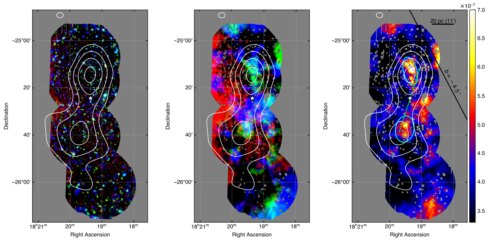
图注：左：XMM-Newton三色图，红、绿、蓝分别为0.5—2、2—5、5—8 keV；星号标记V4641 Sgr。图像合并全部三个EPIC仪器及全部历元，扣背景、校正曝光与渐晕，并以最小信噪比3自适应平滑。白轮廓为H.E.S.S.高于0.8 TeV辐射的3、5、7、9σ显著性层级。中：同左，但掩去点源，以最小信噪比15平滑。右：2—5 keV图及新检出的扩展X射线n1、s1；青色椭圆为提谱区，虚线为射电喷流轴。全部图单位为计数/秒，像素为2角秒。
怎么看这张图：比较去点源前后结团是否保留，再看提谱孔径。平滑信噪比用于图像处理，H.E.S.S.轮廓是另一数据集的显著性，二者不能替代XMM源谱模型检验。 展示点源处理与真实提谱区域。
来源与置信度：arXiv HTML；source verified；https://arxiv.org/html/2610.02966v1/xmm_RGB.png
图4
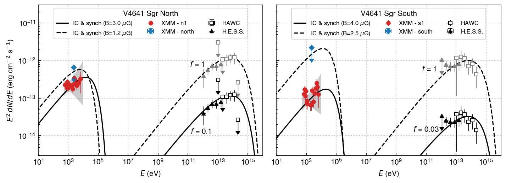
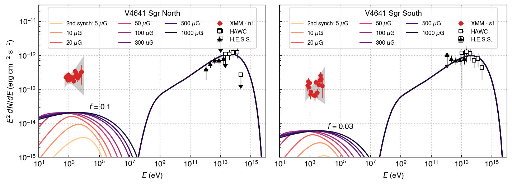
图注：北叶（左）和南叶（右）的宽带谱能量分布。上排：轻子模型。XMM-Newton谱按吸收柱1.7×10²¹ cm⁻²校正，灰色阴影显示系统误差；蓝色X射线上限缩放至H.E.S.S.的95%包围区。灰色伽马谱取自HAWC和H.E.S.S.测量，黑色伽马谱按填充因子f缩放，以便与n1、s1谱比较。实线和虚线分别为X射线结团及无X射线区域的轻子模型。下排：重子模型；仅次级同步辐射分量按f缩放，其余谱和模型均未缩放。重子模型采用气体密度n=1 cm⁻³。
怎么看这张图：关键是黑灰两组伽马点的空间分配，而不只是曲线贴合程度。结团B约3—5 μG与大片区低场可以并存；下排次级电子不足解释结团，不等同排除全部重子伽马贡献。 直接比较空间填充与轻重子解释。
来源与置信度：arXiv HTML；source verified；https://arxiv.org/html/2610.02966v1/figs/SED_n1s1_v5.png；https://arxiv.org/html/2610.02966v1/figs/SED_hadronic_v5_scaled.png
强相关工作
同日EP研究2610.02962已直接核读，两者协调发表且共享H.E.S.S./HAWC/LHAASO资料。EP主要以天空高斯模板份额匹配X射线孔径，XMM则用三维体积填充估计。二者一致支持弱磁场条件模型与扩展电子候选，但并非对场强做两次同口径独立测量。
本文引用H.E.S.S.2024年SS433加速与输运研究（DOI:10.1126/science.adi2048）作类比，也引用Tsuji等2024次级电子同步研究（DOI:10.3847/1538-4357/ad3fb1）讨论重子通道。这些链接身份已由参考表核对，未重分析前作原始数据。共同问题是辐射形态能否定位加速；本文新增V4641的紧致X射线/广延伽马对照，却还没有像成熟输运研究那样完成空间能谱联合反演。
同一事件 / 同类源线索：
相似工作：
基础理论 / 方法工作：
相反观点 / 张力线索：
（未提供）
3. Suppression of spiral density waves in collisionless accretion flows
- 来源：arXiv / astro-ph.HE
- 链接：https://arxiv.org/abs/2610.02475
- 作者：Stephen Majeski, Matthew W. Kunz, Jason Dexter
- 公告 / 来源日期：2026-10-05
- 阅读层级：重点精读
- 评分：novelty 8/10，importance 8/10，relevance 9/10，final 9.35/10
- 推荐理由：无碰撞动力学与散射闭合改变螺旋波激发和衰减，给出具体局域机制推进；全局GRMHD外推尚未验证。
中文题目：无碰撞吸积流如何压低螺旋密度波：微观散射改变激发与传播
做了什么：黑洞吸积流模拟往往比Sgr A∗观测变化更强，作者研究其中一个可能缺失的环节：热而稀薄的等离子体并不处处满足局部热平衡。剪切把领先涡旋扰动转成拖尾密度波，密度波又能影响靠近黑洞的同步辐射。本文在局部剪切片中，用离子动力学和各向异性压力流体方程分别研究有序磁场与缠结磁场，比较朗道/Barnes阻尼和微不稳定性诱发散射的作用。
结果并非“无碰撞就一定强阻尼”。对最容易激发的大尺度波，有序场中的共振阻尼很弱；在充分缠结、热压占优的场中，镜像与firehose（磁张力失稳）不稳定性产生的散射允许黏滞耗散，既削弱激发后的波，也提前消耗作为激发种子的涡旋。在β约3—30的适用范围内效应明显，还偏向激发更小方位波数。作者提出变化幅度和图样速度可能降低，但没有生成全球相对论图像，也未拟合EHT数据。
为什么重要：本文把微观散射、压力各向异性、湍流涡旋和宏观密度波连成了一条具体机制链。它说明即便吸积流发光区本身模型相同，外围产生并传入的波也可能因非平衡等离子体物理而不同，因此EHT变化过强问题未必只来自发光电子处方。这个推进是条件理论解释，尚不能宣称已解决观测危机。
理论 / 观测 / 仪器方法价值：可复用的是逐层极限比较：先固定有序场隔离共振阻尼，再允许波自己触发散射，最后对湍流缠结场平均并区分传播损耗与激发前损耗。特别应保留有效散射率的来源；额外人为散射可能使压力更各向同性、反而降低黏性，因此“增加散射”不总是“增加耗散”。
为什么应该关注：对黑洞时域成像，这决定能否把图中旋转亮结构直接当作物质公转，以及不同吸积态能否用相同流体闭合。对高能等离子体模拟，值得关注的可迁移问题是小尺度不稳定性如何限制压力应力。下一步应在非线性全局模拟中检验激发半径、场方向统计和电子辐射响应，本文没有给伽马或中微子通量预言。
展开详细解读：文章讲解、背景、理论、重点章节、图表与相关工作
文章详细讲解
科学问题
理想磁流体把局部压力看成接近各向同性，适合频繁碰撞或极快散射的介质。低亮度黑洞吸积流的离子库仑平均自由程却很长，波与粒子共振、平行/垂直压力差都可能影响密度扰动。问题是这些效应是否真的能削弱最容易被差异旋转激发的螺旋波，而非只影响短波尾部。
作者怎么做
作者在开普勒局部剪切片中设定随时间变化的径向波数，把非轴对称扰动变成初值问题。有序方位场用KMHD和Hermite–Laguerre展开求离子响应；高β缠结场则以Braginskii压力差闭合，加垂直平均得到可积分的线性方程。数值参数扫描与慢剪切WKB近似交叉比较，分别检验入射密度波和入射涡旋波。
关键结果
无散射有序场主要在波向量接近平行磁场的摆转阶段共振阻尼，因此方位尺度约H的波来不及损失太多能量。缠结场中的微不稳定散射造成的黏性则贯穿更长演化时间，并先消耗伪势涡量，使波还没被激发就缺少能量。固定初始径向/方位波数比为10的扫描中，β=10时最强激发的方位波数可比理想MHD低超过约两倍。
局限和下一步
模型局部、非相对论、线性，冷电子近似只保留离子压力；缠结场被理想化为各向同性，实际MRI湍流必须保有非零输运相关。峰值波数还依赖初始扰动几何。未来需测场的二阶和四阶相关、非线性陡化和真实激发半径，才可把波幅抑制转换为可比较的观测光变与图样速度。
关键结果是怎么做出来的
第一层比较说明共振何时有效。作者以径向速度扰动启动领先快波，让径向波数从−10倍方位波数走到+10倍。对称端点能抵消可逆波作用量变化，避免把摆转时振幅自然降低误认为耗散。峰峰值传输系数T才用于衡量净损失。
第二层用无散射KMHD与理想MHD比较。β=5例子显示摆转附近有中等衰减，但参数图指出显著耗散偏向较大方位波数：波在适合共振的几何状态经历更多振荡。MRI最有效激发的方位尺度约H，对应k_y v_th约Ω，共振阻尼不够强。
第三层让波自身压力差触发微不稳定性。β=30、初始速度0.1倍热速的例子中，压力差达到阈值就开启有效散射，限制其继续增长，并增加黏性耗散。然而扫描只见有限增强；高β和较大波幅使散射过强时，流体趋向各向同性理想极限，耗散反而减小。
第四层改成湍流驱动散射。各向同性方向平均把各向异性应力变成约为同参数各向同性黏性五分之一的有效应力，热传导因曲折路径进一步抑制。取散射率约3βΩ/4后，中等β的波即使方位波数不大也被压低；很高β使黏度趋小。
第五层加入真正的涡旋到声波转换。伪势涡量不再守恒，在摆转前已衰减，摆转后生成的密度波又继续损失。图8把这两段分开，图9显示激发谱向低k_y偏移。结论依赖初始领先程度，不能把“两倍偏移”当作所有黑洞的普适值。
最后才连接观测。波若从外围传播到视界附近，会影响非轴对称同步亮度，但振幅到光子变化还经过电子加热、辐射转移和时空透镜。图样速度降低的推论又要求激发半径不变且波仍主导亮结构；若这些条件改变，方向也可能改变。
展开背景、理论、公式、模型和章节导读
背景知识
差异旋转意味着不同半径流速不同。一个原先倾斜的扰动会被背景剪切不断转向，径向波数改变符号，这叫摆转。涡旋扰动通常弱压缩，但在摆转时可与声学分支耦合，将原先不明显的密度扰动转成螺旋密度波；这一过程不要求预先存在稳定螺旋臂。
磁旋转不稳定性MRI可从向外递减的角速度中提取能量，维持湍流和角动量输运。湍流提供慢变涡量种子，剪切完成模态转换。这里讨论的是这种动力学波，不是物质团块绕黑洞刚性转动，因此图像图样速度和流体公转速度可能不同。
无碰撞指库仑碰撞很少，不意味着粒子完全不散射。磁场缓慢变化使沿场和垂场压力不同，差别达到磁能密度量级便可激发离子回旋尺度的镜像或firehose（磁张力失稳）不稳定性。它们扰动粒子俯仰角，把压力差限制在阈值附近，为大尺度流动提供有效散射。
共振阻尼与黏性耗散是两种机制。前者要求粒子与波保持相位联系，通过分布函数重排吸收波能；后者涉及速度梯度生成压力差，再经散射热化。强散射能破坏共振，但又压小压力差，因此耗散对散射率不是单调函数，必须说明所在闭合极限。
基础理论 / 方法脉络
β定义为热压与磁压之比，β大表示热压占优，并非绝对磁场强弱。高β时很小相对压力差便能触发微不稳定性，所以有效散射率可随β增长。本文把库仑碰撞与微不稳定散射严格分开，后者才是主要非理想闭合来源。
KMHD适用于变化频率远小于回旋频率、尺度远大于回旋半径的磁化等离子体。它保留离子沿场速度分布和压力矩，冷电子只屏蔽平行电场，因此本文没有经典电子朗道通道。Barnes磁镜共振与非惯性力仍可阻尼波，不能由“冷电子”推断所有共振消失。
散射足够快时，可用Braginskii闭合把压力差近似成应变率乘p/ν_eff。该简化要求有效自由程短于所研究波长；缠结磁场增加沿场真实路径，在平均意义下帮助满足条件。论文在参数扫描边缘指出局部违反条件的区域，那里不能把近似公式视为严格动力学解。
各向同性缠结是数学可处理的极限，不是真实MRI场的完整统计。二阶方向张量平均为单位阵的三分之一，四阶平均给应力的五分之一因子；实际非零径向—方位相关承担角动量输运。若只把场随机化而删除相关，就会同时删除吸积本身的关键物理，需要用模拟修正。
公式与推导
下面按原文式(1)、(2)、(8)、(10)、(19)、(28)—(32)串联；最后为原文§4的观测解释关系。省略冗长动力学核，不代表已复算全部谱方法。
- 定义压力各向异性与高β不稳定阈值：
两支分别为镜像和本文采用的firehose（磁张力失稳）阈值，均为高β近似。热压大时更小的相对压力差即可不稳定。
- 压力差驱动与散射平衡给原文量级：
重复指标求和，应变率和ν单位均为逆时间。在湍流剪切背景，本文取ν_eff≈3βΩ/4；这不是对真实黑洞散射率的测量。
- 快散射闭合写成：
因此更大ν使黏度减小。该关系需ν至少与跨波传播频率可比，不能外推到零散射极限。
- 非轴对称剪切波满足：
从负k_x到正k_x跨过摆转。方位波数k_y不变，但总波数随时变，使固定频率本征模不足以描述全过程。
- 对称端点的峰峰值幅比定义传输：
初始k_x,0为负值。这样消去对称的可逆波作用量效应；T是振幅比例，能量损失不能直接写成1−T。
- 慢剪切、弱黏性声波近似给出：
后式专用于文中的−10k_y到+10k_y路径及ν_eff=3βΩ/4。指数无量纲，显示大k_y损耗更强，极高β反而趋近无耗散。
- 涡旋种子也会在摆转前衰减，原文给显著抑制条件：
第一条约对应至少e倍激发抑制，第二条维持Braginskii近似。两条合用说明结论依赖初始领先程度，不能只报一个β临界值。
- 原文图样角速度关系为：
负号对应向内传播分支。低m可使图样转慢，但激发半径r₀、ω和波是否仍主导亮度都必须一并控制，本文未完成全局预测。
模型拟合 / 应用方法
本文没有用观测数据做参数拟合，其检验是线性初值求解与解析极限比较。有序场背景取各向同性Maxwell分布，扰动经Hermite–Laguerre展开，扫描β和k_y \(v_th\)/Ω。波的初始幅度、波数比和积分端点均影响结果；背景真实分布非Maxwell的可能性明确列为简化。
散射由简化Krook算符让分布趋向同密度同温度Maxwell。真实俯仰角散射只使方向各向同性，并不保证Maxwell化；作者说明低阶压力矩在线性层面相似，但更高矩和热流仍可能不同。这里没有用真实微不稳定粒子模拟直接测所有散射系数。
缠结场中平均后的应力、热流抑制和被忽略非线性项共同得到式26。数值T曲线与WKB近似在包括部分慢剪切外的区域仍接近，是内部一致性证据，不是全局GRMHD与观测验证。图9峰值波数随初始领先程度变化，真实湍流的种子分布尚未固定。
下一轮有效检验应在保持足够回旋—湍流—波长尺度分离的混合动力学模拟中测压力差与场方向相关，再比较密度波谱及光变。附录式41的感应方程写法与主文式5符号相反，本稿采用主文标准形式理解，不抄该式作推导，也不声称已替作者修复数值实现。
重点章节 / 结果段落怎么读
-
§1.1及图1：先弄清涡旋摆转如何产生声波，这是激发问题的起点。
-
§2：按有效自由程判断KMHD与Braginskii闭合，区分库仑碰撞和微不稳定散射。
-
§3.1及图3—5：观察共振阻尼只在某些波数强，波自激散射并非主要抑制来源。
-
§3.2.2—3.2.3及图8—9：比较激发前涡量损失与激发后声波耗散，检查初始波数比。
-
§4—5：逐条保留激发半径、线性、场方向和电子辐射的限制。
关键图表与解读
图8
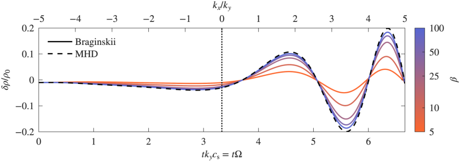
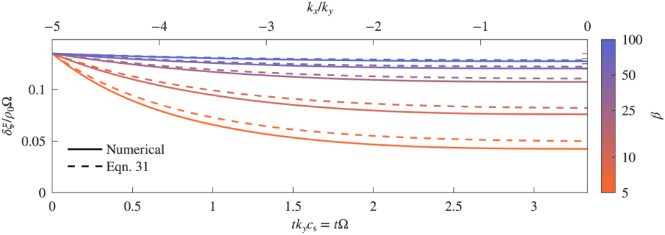
图注：（a）$k_y=H^{-1}$的前导涡旋波密度扰动在摆转时转为螺旋密度波的演化，竖点线标摆转时刻。虚线为H&P研究的理想磁流体极限；色条刻度标各解的β，β=5阻尼最强，β=100最弱。（b）上图Braginskii解在摆转前的伪势涡度PPV扰动演化（实线），与$k_y\gg|A|/c_s$极限近似、原文式31（虚线）比较。激发前PPV已明显衰减；即便这些波满足$k_y\sim|A|/c_s$，式31仍较好描述该阻尼。
怎么看这张图：上排同时含激发前种子损失和激发后的波阻尼；下排将前者单独显示。不能把最终振幅低全归因于声波传播损耗。 分开前导种子衰减与后续传播。
来源与置信度：arXiv HTML；source verified；https://arxiv.org/html/2610.02475v1/shwave_vbeta.png；https://arxiv.org/html/2610.02475v1/ppv_comp.png
图9
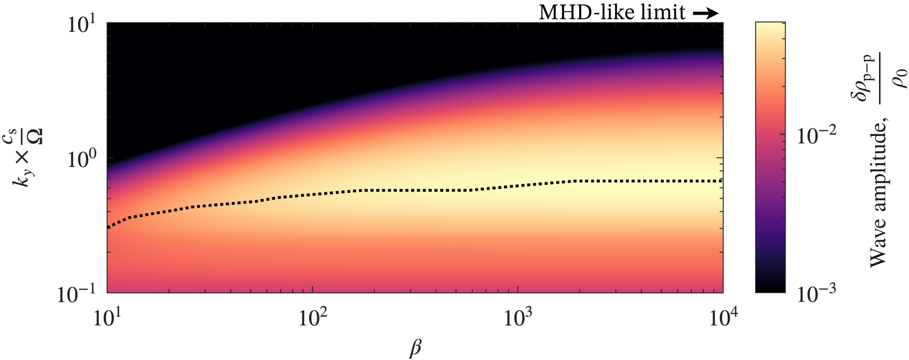
图注：初始涡旋扰动$\delta\xi=0.01\rho_0\Omega$激发的螺旋密度波峰峰振幅随$k_y$和β的变化，设$k_{x,0}=-10k_y$。点线追踪各β处激发最强的$k_y$。黏性阻尼使中等β的峰值移向较小$k_y$；极高β时，微观调节使黏性很小，峰值接近H&P预言的$H^{-1}$。因此，中等β、可能出现在低光度吸积流中的非局域热平衡螺旋波，比理想磁流体对应情形（此处以渐近高β近似）的振幅和方位波数更低。
怎么看这张图：横向峰值漂移意味着主导结构尺度改变，而不是直接测得黑洞自旋。固定的初始径向波数比例和各向同性缠结场假设，会影响峰位及可观测外推。 核心峰值波数转移结果。
来源与置信度：arXiv HTML；source verified；https://arxiv.org/html/2610.02475v1/excite_range_xi_labels.png
强相关工作
作者将Heinemann与Papaloizou2009的理想MHD激发理论及模拟作为基准（DOI:10.1111/j.1365-2966.2009.14799.x；10.1111/j.1365-2966.2009.14800.x）。本文保留涡旋摆转的动力学框架，新增非LTE应力导致的种子和传播损耗。参考身份及文中比较位置已核，未独立重跑前作模拟，不能把跨论文幅度比当作受控实验结果。
Majeski等2023的压力各向异性波研究（DOI:10.1017/S0022377823000429）提供微不稳定散射背景，Dhruv等2025全球弱碰撞模型（DOI:10.3847/2041-8213/ae1236）则是观测应用线索。作者认为后者额外散射可能压低黏性作用，这是需要新模拟检验的解释，不能称为已证明其模型错误。
同一事件 / 同类源线索：
相似工作：
基础理论 / 方法工作：
相反观点 / 张力线索：
（未提供）
4. Comparing the size evolution of GRB 221009A with afterglow models
- 来源：arXiv / astro-ph.HE
- 链接：https://arxiv.org/abs/2610.02988
- 作者：S. Giarratana, O. S. Salafia, B. Marcote, Z. Paragi, M. Giroletti, G. Ghirlanda, L. Nava, A. van der Horst
- 公告 / 来源日期：2026-10-05
- 阅读层级：重点精读
- 评分：novelty 8/10，importance 8/10，relevance 9/10，final 9.35/10
- 推荐理由：晚期VLBI尺寸检验余辉动力学，条件性约束能量密度比；部分既有模型不符，不能概括排除全部模型。
中文题目：GRB 221009A晚期VLBI尺寸检验：光变拟合还必须解释余辉有多大
做了什么：作者用全球甚长基线干涉阵列在爆发后231、391、750天观测GRB 221009A的5 GHz余辉。通过直接拟合干涉可见度，前两次得到圆高斯半高全宽0.31±0.04 mas和0.68⁺⁰·¹²₋₀·¹⁷ mas，第三次只给95%上限0.94 mas。联合较早5和8 GHz尺寸，膨胀幂律斜率为0.52⁺⁰·¹⁴₋₀·¹²；这提供了不同于总流量的动力学信息，但尚不能区分均匀介质与恒星风。
在晚期5 GHz由前向激波主导、轴向观察、顶帽喷流等假设下，VegasAfterglow尺寸拟合限制准直修正能量与密度之比。作者再把可复现的已发表光变模型生成图像，其尺寸曲线均不能同时解释这些测量。这个结论适用于可实现、且已检查其光谱与光变复现的模型子集，不是排除所有标准余辉机制，更不是测出了唯一喷流能量和环境密度。
为什么重要：余辉流量同时依赖能量、环境密度、电子与磁场能量份额，很多参数组合可给相似光变。角尺寸直接增加空间尺度，限制激波扩张的动力学比值，因而能揭示原来被流量退化隐藏的模型不足。本文最强贡献是新高信噪比尺度与统一观测量定义的模型检验，而非仅更新一个膨胀斜率。
理论 / 观测 / 仪器方法价值：值得借鉴的流程是先在可见度空间推断圆高斯尺寸和天线振幅修正，再将物理模型亮度图转换为同一有效半高全宽，并注入模拟观测验证转换。这样避免把物理激波外沿半径直接与高斯拟合宽度比较。对于其他暂现源，观测量定义和阵列采样误差应先统一，才讨论参数张力。
为什么应该关注：GRB 221009A的甚高能余辉与LHAASO资料使喷流结构、环境和多辐射区解释格外重要。无线电几何可约束这些模型，却不能把晚期前向激波大小直接转成早期TeV发射半径。接下来需要尺寸、光谱和光变的联合推断，并保留反向激波、茧和时变微物理的可能性；本文只做尺寸拟合和部分模型外推检验。
展开详细解读：文章讲解、背景、理论、重点章节、图表与相关工作
文章详细讲解
科学问题
极亮GRB拥有丰富光变仍可能存在参数退化：较高能量、较低密度和不同喷流角度可以产生相近辐射。作者要用余辉图像的几何扩张检验动力学，尤其看已有解释光谱的模型是否预测正确的天空尺寸，而不是再拟合一条总流量曲线。
作者怎么做
三次全球VLBI联合EVN、VLBA、部分LBA和VLA数据，在5 GHz取得深图。校准后在可见度空间用MCMC拟合圆高斯，并用独立检查源检验相位参考。随后用VegasAfterglow生成前向激波亮度图，把亮度加权径向二阶矩转换成等效高斯全宽，再与100天以后的5 GHz尺寸拟合。
关键结果
231天的尺寸精度约13%，391天约数十个百分点；750天源变暗且缺重要天线，只得到上限。联合尺寸的斜率支持扩张，作者由非正斜率后验约7×10⁻⁶换算约4.5σ等效表述。准直修正Sedov比在ISM下log₁₀[(E_jet/n)/(erg cm³)]=54.2⁺⁰·⁴₋₀·⁵，在风下log₁₀[(E_jet/A*)/erg]=51.7⁺⁰·⁴₋₀·²，均为条件68%可信区间。
局限和下一步
检查源赤经跨历元相差超过5σ，阻止可靠自行结论；它不是GRB自身超光速质心移动的证据。已有模型比较也受原始代码不可得、部分微物理无法复现和晚期FS假设限制。摘要称全部最佳参数不相容，而§5.1对Sedov比明确保留O’Connor与Sato例外；更强结论是这些可复现模型的尺寸曲线仍不符，应分开陈述。
关键结果是怎么做出来的
首先确定实际空间信息来自哪里。前两次观测信噪比约70和30，源宽虽低于合成束，但可见度随基线长度的微弱变化仍限制大小。MCMC加入天线振幅修正，使误差比只拟合图像更保守。第三次缺Effelsberg且通量降到约20 μJy，不能把0.94 mas上限当作测量点。
其次检查相位参考的可用范围。检查源前两次峰值与尺寸约在1σ内一致，赤经位置却不一致，因此尺寸可以保留、自行不能主张。原文单独报告校准验证，而非将所有天体测量量一起判为成功；这对解释所谓超光速尤其重要。
幂律拟合用5和8 GHz，排除可能相位去相关且辐射成分不明的15 GHz。结果斜率0.52与喷流折断后约0.5趋势相容，但误差仍宽；“某解析斜率不在1σ内”不能写成排除某介质。约4.5σ是给定幂律和后验处理的扩张证据，非所有系统误差边缘化后的模型发现。
物理拟合仅用100天后的5 GHz，假设由FS主导。作者固定微物理和初始洛伦兹因子，以能量密度比及喷流角为主要自由度，用合成亮度图定义有效尺寸。参数扫描显示所试微物理变化只令尺寸改变几个百分点，但这是对所试模型范围的检验，不证明复杂多区辐射也不敏感。
后验展示清楚的角度—Sedov比退化，按喷流折断早于或晚于200天分色只是同一后验的子集，不能当成两个独立数据证据。准直修正后的比值比各向同性比更窄，仍不能把密度固定为1的数值实现误称密度测量。
最后把五组可复现光变模型转换为尺寸。部分系统性偏大、部分偏小；未能复现光变或未提供物理参数的方案不参与直接比较。原文承认无法核对各作者代码的真实亮度图，故张力支持开展联合建模，而非在统计上整体否定所有结构化喷流和额外辐射成分。
展开背景、理论、公式、模型和章节导读
背景知识
干涉阵列测得的是天空亮度的空间傅里叶分量，即可见度。长基线对小尺度更敏感，但有限信噪比限制可测尺寸。所谓超分辨是带模型地利用可见度变化推断小于合成束的宽度，不是看到了每个细节；形状先验和振幅校准会影响结果。
圆高斯的半高全宽是一个亮度分布指标，不等同激波真实外半径。余辉常呈中心较暗、边缘较亮的环状结构，其高斯拟合尺寸取决于亮度权重。把前向模型也转成相同有效宽度，是用尺度检验动力学的必要步骤。
前向激波扫过外介质，反向激波进入抛射物，两者可在不同时间和频率主导。本文把晚期5 GHz归于前向激波，但早期研究曾用反向激波解释同类低频资料，因此新旧物理参数不一致并不全部来自新数据，还可能来自辐射成分假设变化。
在均匀介质中扫掠质量随半径立方增加，恒星风密度按半径负二次方下降，扫掠质量则近似线性增长。相同能量下两种介质减速和膨胀不同；喷流角度及横向扩张又增加退化。几何测量提供独立信息，却仍需要时间跨度和辐射模型来区分情景。
基础理论 / 方法脉络
动力学的主要尺度由能量与环境密度之比控制。\(E_iso\)/n的量纲是erg cm³，A为无量纲恒星风参数，所以E_iso/A以erg表示；原文个别段落将密度比单位写反或写成cm⁻²，本稿按定义保持量纲一致，不改变报告的对数数值。
相对论运动的光行时效应可使投影扩张速度大于光速，并不要求物质超光速。本文由半高全宽的一半除以源系时间求平均表观扩张速度，和亮度质心自行不同。圆高斯宽度也不是唯一的真实边界，所以该速度用于统一比较而非直接求喷流洛伦兹因子。
喷流折断发生于可见角范围接近喷流角度的阶段。折断前尺寸对角度较不敏感，后验会沿角度方向变宽；折断后能量密度比与角度相关。横向扩张处方进一步改变关系，原文解析折断时间与VegasAfterglow约差两倍，说明折断本身不是锐利瞬间。
等效尺寸需要对实际亮度积分。原文称式5为first moment，但其积分含R²，数学上是径向二阶矩。对于小于合成束的源，可见度的小基线展开由二阶矩控制；当源充分分辨、形态复杂或不同分量分离时，仅用一个圆高斯宽度可能不足。
公式与推导
以下采用主文式(1)—(5)与文中物理参数定义；Sedov长度的量级式为教学补充，不把它当作作者额外拟合。
- 密度设定与恒星风尺度为：
A*由质量损失率与风速比归一化，故无量纲；n(r)始终以cm⁻³表示，避免把两种密度参数混用。
- 扫掠质量与能量量级给出教学Sedov长度：
假定球对称或等效各向同性介质，只用于说明为何几何限制能量/密度比。喷流横向演化仍由数值模型计算。
- 原文的准直修正为：
近似要求角度小且以弧度表示。结构化喷流须积分能量角分布，不能将核心角机械代入顶帽式。
- 原文用亮度二阶矩定义有效高斯宽度：
X、Y用一致角单位，I为表面亮度。圆高斯可精确恢复全宽，其他形态需模拟观测验证，不能直接用外缘直径替换。
- 膨胀现象学模型为：
a=0.52⁺⁰·¹⁴₋₀·¹²来自5与8 GHz联合拟合，假定它们追踪同一成分。物理模型只使用100天后5 GHz，两种拟合的数据范围不同。
- 原文定义平均表观速度：
角度必须换成弧度，z=0.151、\(d_A=548\) Mpc。首两次约2.4c和3.2c是从爆发到观测的平均宽度扩张，不是瞬时速度或可靠的质心自行。
- 将原文结果写成量纲清楚的参数组合：
误差是条件模型下68%可信区间。要得到能量本身仍须外部密度约束，不能把两个不同情景的对数值直接相减比较。
模型拟合 / 应用方法
可见度拟合参数包括总通量、圆高斯全宽、位置和天线振幅修正。检查源揭示位置校准问题，作者不据此推自行；首两次尺寸对后续数据标记保持约1σ一致。最后一次阵列缺重要天线，所以采用上限，不给伪精确尺寸。
VegasAfterglow实现中设n=1 cm⁻³或A*=1，只为用Sedov比计算E_iso；同时固定初始洛伦兹因子100、p=2.5、ε_e=0.1、ε_B=10⁻³、视角0，并允许横向扩张。微物理敏感性扫描涵盖较宽参数范围，却没有联合拟合多波段光度，故不能从此后验声称已解释整套余辉。
每个介质情景用50个walker、5000次迭代，宽先验覆盖Sedov比和折断时间10⁻³—10³天。文中没有在本解读中可独立复算的完整链诊断，所以迭代次数不能代替收敛证明。后验红蓝颜色只是折断前后的参数子集，所有区间依赖顶帽、轴向和晚期FS设定。
附录A用合成可见度检验式5，模拟24小时相位参考、热噪声和真实天线坐标。超分辨范围宽度通常相差小于约10%，接近束宽可到20%或更高；像素与随机噪声分别贡献约2%和5%。主文较宽的10—20%说明应保留转换系统误差，不能把13%观测精度直接等同物理模型全部误差。
文献对照尽量先复现光变/光谱，再比较图像。原代码亮度分布不可得、部分反向激波不一致、某模型不同区域微物理不能直接实现，这些限制逐项列出。对照未做全模型重新联合优化，报告的张力是对已发表参数及可实现情景的检验，后续可由新的参数组合或额外辐射区改变。
重点章节 / 结果段落怎么读
-
§2与表1：核对三次阵列覆盖、检查源和750天上限，分开尺寸与自行可靠性。
-
§3.2及图3：看5/8 GHz幂律、15 GHz排除原因和后验意义，避免过度解读1σ差异。
-
§4.2—4.3、式5及附录A：检查物理亮度图怎样变成同口径高斯宽度。
-
§5.1与表2：保留Sedov比比较的例外及新旧FS/RS解释差异。
-
§5.2—5.3与图6：区分已测试曲线失配和因不可复现而未测试的模型。
关键图表与解读
图4
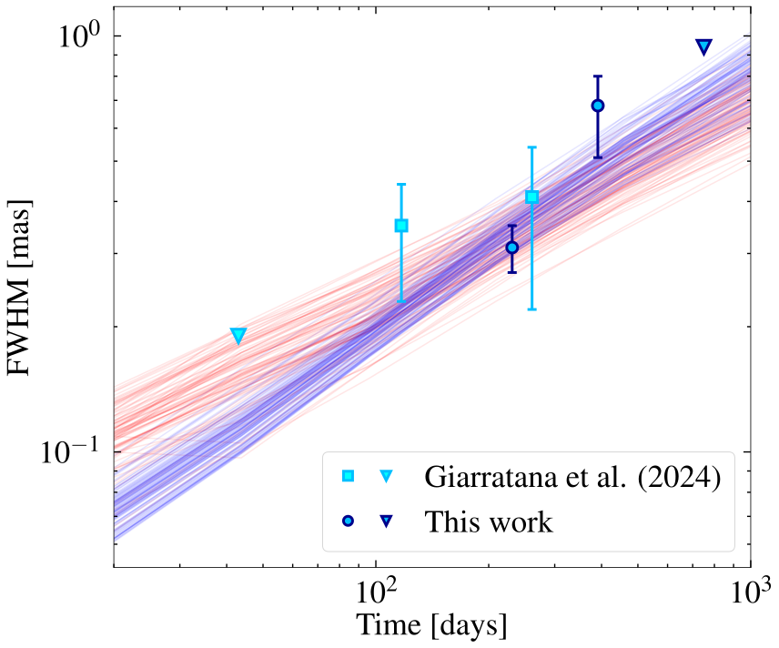
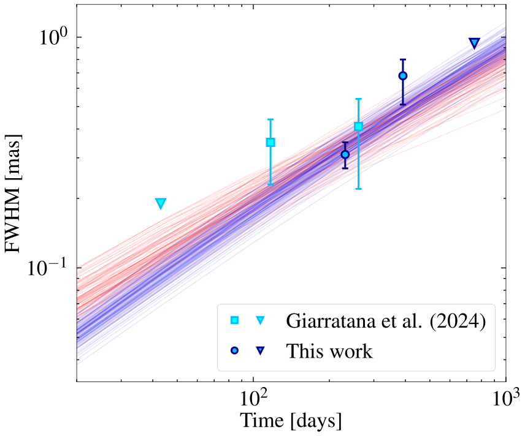
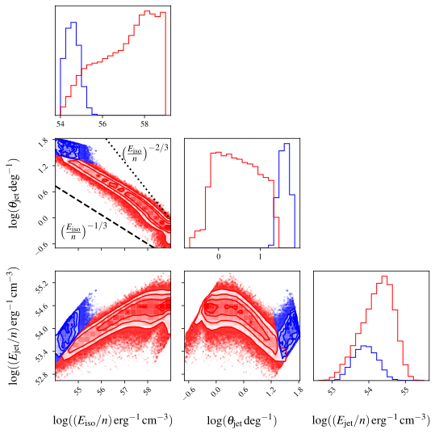
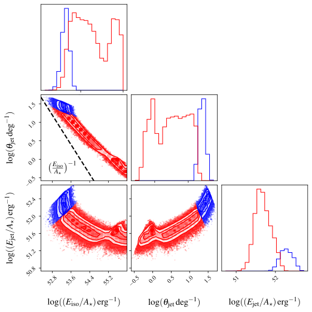
图注：5 GHz尺度扩张（上排）及物理模型拟合尺度测量所得参数的角图（下排），左为均匀星际介质情形，右为星风情形。上排实线用100个随机后验样本生成；蓝色为$t_{\rm jet}>200$天，红色为$t_{\rm jet}<200$天。下排角图分别用这两组样本构建后验概率密度。虚线和点线为Granot等（2005）给出的Sedov比与喷流半张角的解析关系，具体解释见正文。
怎么看这张图：先看两类外介质如何都容纳稀疏尺度点，再看角图的开角—能密比退化。红蓝是按转折时刻切分的同一后验，不能当作两次独立观测。 尺度拟合及退化的直接证据。
来源与置信度：arXiv HTML；source verified；https://arxiv.org/html/2610.02988v1/Bayesian_fit_plot_ISM_4.svg；https://arxiv.org/html/2610.02988v1/Bayesian_fit_plot_wind_4.svg；https://arxiv.org/html/2610.02988v1/corner_plot_ISM_4.svg；https://arxiv.org/html/2610.02988v1/corner_plot_wind_3.svg
图6
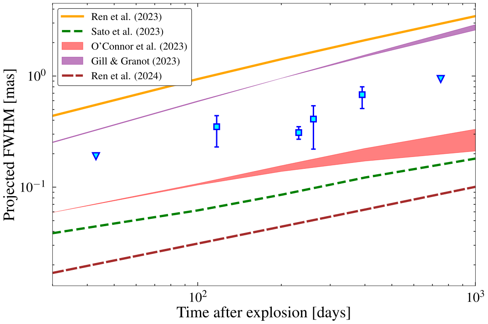
图注：GRB 221009A的实测尺度演化与文献余辉模型预言的比较。蓝色方块为5 GHz甚长基线干涉观测；利用VegasAfterglow计算的各模型角尺度，以与原文图5图例相同的颜色和线型显示。
怎么看这张图：图中直接检验旧模型能否同时解释尺度。所复现的五组模型均有偏离，但覆盖的模型和转移实现有限；原文摘要的统一2σ排除表述强于正文，本文不据此排除所有已发表模型。 展示光变模型受到独立空间观测的挑战。
来源与置信度：arXiv HTML；source verified；https://arxiv.org/html/2610.02988v1/Figure_all_models_size_test_2.svg
强相关工作
Giarratana等2024（A&A690 A74，本文参考15）提供早期VLBI测量，本文加入晚期全球阵列并改变晚期辐射成分解释。因此资料部分重叠，新旧Sedov比不能视为独立测量相互反驳。引用身份来自已读参考表，正文也明确此前假定反向激波，而本次100天后取前向激波。
O’Connor等2023的结构化喷流研究（Science Advances9 eadi1405）及Granot等2005的尺寸标度（ApJ618413，本文参考21）分别代表光变解释和动力学基础。这里核对本文对它们的实现与限制，未运行前作代码。几何检验的新信息来自尺寸曲线；抽象地比较单个准直修正比值并不足以判定结构化模型优劣。
同一事件 / 同类源线索：
相似工作：
基础理论 / 方法工作：
相反观点 / 张力线索：
（未提供）
相关简报
1. Guide field effects on particle acceleration in three-dimensional relativistic magnetic reconnection
- 来源：arXiv / astro-ph.HE
- 链接：https://arxiv.org/abs/2610.03427
- 作者：Despina Karavola, Lorenzo Sironi, Maria Petropoulou
- 公告 / 来源日期：2026-10-05
- 阅读层级：相关简报
- 评分：novelty 7/10，importance 8/10，relevance 10/10，final 9.40/10
- 推荐理由：开放边界3DPIC检验导引场下快速加速存续与参与粒子减少，对高能谱陡化有直接机制意义。
中文题目：三维磁重联中，引导磁场降低快速加速粒子的占比
问题、方法与结论：作者用三维相对论粒子网格模拟，研究沿电流方向的引导磁场怎样改变正负电子加速。在磁化度固定为10、引导场与反向磁场之比由0增至1的模型中，沿重联电场快速增能的轨迹仍存在，但满足长距离快速加速条件的粒子比例约从7%降到0.5%，能谱变陡，最高能量也降低。这个比例的分母是曾达到指定能量的预选追踪粒子，不是全部等离子体。
意义与贡献：结果说明三维快速加速机制可以在较强引导场下继续工作，却不代表其效率不变。二维模拟在全部测试场强下都低估高能尾，因而用二维结果推断辐射源粒子分布时需额外验证。
可借鉴之处：可借鉴的是同时比较能谱、单粒子增能轨迹和局部漂移系中的俯仰角，并改变快速加速判据检验趋势。重联速率和参与比例应分别统计，不能用少数高能轨迹替代总体能量收支。
局限与关注点：结论限于固定磁化度、有限模拟尺度及对等离子体组成的设定。强引导场使混合度不再可靠地区分自由与俘获粒子；图7的阈值范围反映判据敏感性，不是观测置信区间。与高能辐射及偏振的联系仍需加入辐射和具体源条件。
图7
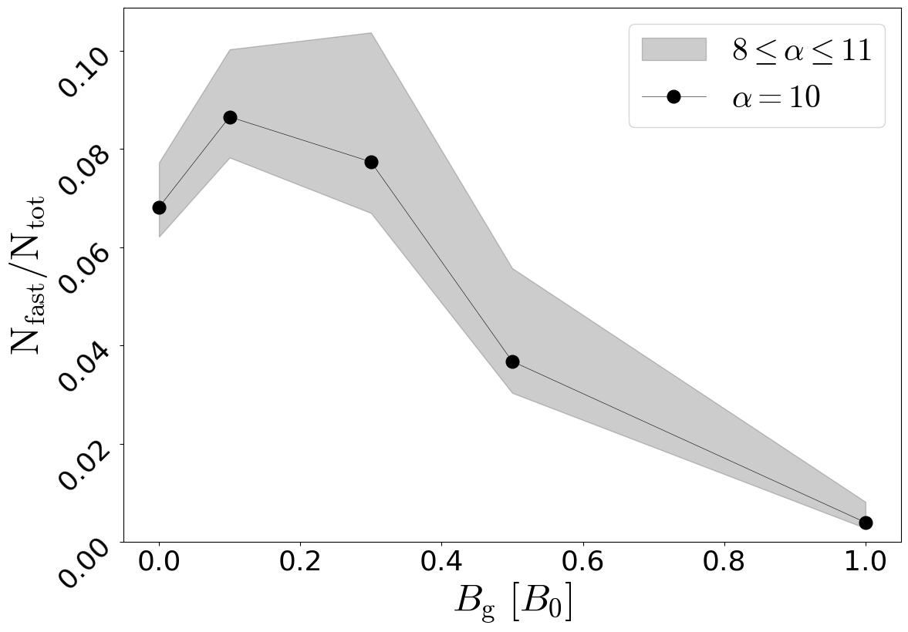
图注：黑色标记给出快速加速粒子的比例：定义为取原文式3的α=10时进入图6右上象限的粒子。灰色阴影表示把α在$8\leq\alpha\leq11$范围内改变时，该比例的变化。
怎么看这张图：随引导场增强，达到该增能及位移判据的比例下降。分母是已预选的高能追踪粒子；灰带是判据敏感性，不是统计置信区间。 最直接的加速参与比例与阈值检验。
来源与置信度：arXiv HTML；source verified；https://arxiv.org/html/2610.03427v1/3D_perc_simple.jpg
2. Testing internal dynamics in neutron stars with radio pulsar timing
- 来源：arXiv / astro-ph.HE
- 链接：https://arxiv.org/abs/2610.02291
- 作者：Reginald Christian Bernardo
- 公告 / 来源日期：2026-10-05
- 阅读层级：相关简报
- 评分：novelty 7/10，importance 8/10，relevance 9/10，final 9.05/10
- 推荐理由：相位数据比较内外随机力矩，三区分结果及Vela失败边界有计时价值；PPC偏低限制模型充分性。
中文题目：射电脉冲星计时能否分辨内部角动量交换？
问题、方法与结论：作者用三颗孤立脉冲星的相位数据，比较两组分中子星的两类随机力矩：等大反向的内部交换，以及允许总角动量扩散的独立力矩。J1359−6038的对数贝叶斯因子为6.59，约对应700∶1的模型相对证据；B1937+21仅0.93，无法有效区分；Vela虽为17.19，却需要将计时误差放大约7倍，残余结构限制物理解读。
意义与贡献：这把计时红噪声与角动量守恒条件联系起来，也明确展示“模型更受偏好”和“模型足以解释数据”是两件事。所谓平稳指角速度涨落，积分后的相位仍非平稳。
可借鉴之处：可借鉴的是直接在相位空间建协方差、共同边缘化计时参数，再用色散扰动和先验范围作敏感性检验。超流体相位是给定内部动力学的条件预测，并非射电直接观测。
局限与关注点：三源后验预测检验均偏低，不能只警惕Vela：J1359两模型约0.005—0.006。转动惯量比例多未被约束；B1937独立力矩模型的超流体方差不稳定。连续引力波若能可靠追踪内部相位，才可能额外检验；本文未检测该信号。
图1
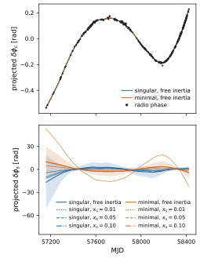
图注：J1359−6038的相位残差与重建。实线为后验均值，阴影为一个标准差。细线为在拟合参数下、超流体转动惯量份额$x_s=0.01,0.05,0.10$的条件均值。误差棒显示投影后的计时误差，尚未施加额外拟合的噪声重标定。下图是未观测到的超流体相位预测。
怎么看这张图：相近的壳层拟合可对应不同内部相位，体现射电单独反演的退化。下图不是第二个被观测组分；贝叶斯证据需与残差预测检验同读。 展示可见组分与条件内部预测的区别。
来源与置信度：arXiv HTML；source verified；https://arxiv.org/html/2610.02291v1/j1359_reconstruction.svg
3. The Structure in the Structure Function of Black Hole Light Curves
- 来源：arXiv / astro-ph.HE
- 链接：https://arxiv.org/abs/2610.02729
- 作者：Daniel C. M. Palumbo, Alejandro Cárdenas-Avendaño, Lena Murchikova
- 公告 / 来源日期：2026-10-05
- 阅读层级：相关简报
- 评分：novelty 7/10，importance 8/10，relevance 9/10，final 9.05/10
- 推荐理由：十二年毫米光变连接Matérn、透镜化模型与72组GRMHD，提供MAD/SANE判别及共同过度变化问题。
中文题目：Sgr A∗光变结构函数更接近强磁盘的形状，但振幅仍不符
问题、方法与结论：作者汇总2009—2021年ALMA、SMA与CARMA的230 GHz光变，用成对流量差的均方根研究100秒以上变化，并与解析随机过程、带相对论光线追迹的合成盘及72组广义相对论磁流体模型比较。在约5—15分钟时标，观测结构函数斜率更接近磁通积聚足以调节吸积的磁阻塞盘；较弱净磁通模型则更早变平。两类模拟的变化振幅总体都高于实测。
意义与贡献：斜率和振幅给出不同诊断：前者提示磁态相关的时间结构，后者暴露共同缺失的物理。形状相近不能据此认定某一盘模型已整体通过观测。
可借鉴之处：方法价值在于把内禀湍流、不同半径的相对论权重及高阶光子回声分开。结构函数适用于不规则采样，但长时延仍受有效独立片段数限制，不能把约一万秒处弯折直接定为物理退相关时间。
局限与关注点：观测混合多年异质资料，历元振幅可差约两倍；模拟只取有限倾角及电子加热参数，并采用快光近似。示意模型曲线经过归一化，未作数据拟合或给出MAD发现显著性；一个弯折也不能唯一解释为黑洞光子环回声。
图5
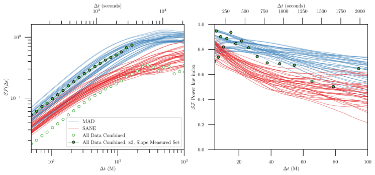
图注：Sgr A∗的72段广义相对论磁流体模拟影片中，MAD与SANE结构函数的比较。绿色空心圆为观测结构函数，带黑边的绿色实心圆是将同一观测值乘3、仅为比较形状；常数缩放不改变对数斜率。左：在5M至1500M间取300个时延计算结构函数。右：在最初20个时延上，用相邻两点滑动计算双对数斜率，也即结构函数幂律指数。SANE在对应Sgr A∗数百秒的时延上转为较浅斜率，观测变化谱更接近MAD动力学。
怎么看这张图：左图看模拟振幅仍偏大，右图看斜率差异；不能用人为乘3后的重合掩盖振幅失配。M是引力时间单位，Sgr A∗中约20秒。 同时保留形状偏好和振幅矛盾。
来源与置信度：arXiv HTML；source verified；https://arxiv.org/html/2610.02729v1/data_GRMHD_SF_fig.svg
4. Forward Bayesian Inference for the Binary Black Hole Populations
- 来源：arXiv / astro-ph.HE
- 链接：https://arxiv.org/abs/2610.03459
- 作者：Poulami Dutta Roy, Tanmaya Mishra, Achal Kumar, Sergey Klimenko
- 公告 / 来源日期：2026-10-05
- 阅读层级：相关简报
- 评分：novelty 7/10，importance 8/10，relevance 9/10，final 9.05/10
- 推荐理由：无模板cWB前向群体推断提供独立分析方法；以模拟选择和质量回归校准，尚不能消除全部波形依赖。
中文题目：PopCWB用探测与重建模拟前向推断双黑洞种群
问题、方法与结论：作者将O3中cWB检出的36个双黑洞事件，与注入真实噪声并经过相同搜索的模拟事件比较。机器学习先估计源参考系总质量，再以排序后的质量分布构造种群似然。包含脉动对不稳定超新星的模型给出恒星演化黑洞特征质量上限45.5⁺⁵·³₋₆·₅太阳质量，本地并合率23.1⁺¹¹·³₋₈·₄ Gpc⁻³ yr⁻¹；区间为90%口径。
意义与贡献：前向流程提供独立于逐事件后验复用的种群推断途径，并使选择效应与质量重建误差进入同一模拟链。所得质量堆积可与恒星演化预期相容，但不等于直接测出核反应率。
可借鉴之处：值得借鉴的是把模拟和观测送入同一搜索、以探测阈值选样，并检验排序产生的相关性。作者用含协方差的替代似然得到相容参数；这些测试支持本样本应用，不能证明任何重建偏差都会抵消。
局限与关注点：低质量端、质量比和高质量成分仍弱约束。高质量事件主要由GW190521支撑，不能分开层级并合与大质量恒星直接坍缩；红移演化固定，注入波形和训练分布仍限定适用范围。约45太阳质量是模型中的特征截止，散布与其他形成渠道可越过它。
图3
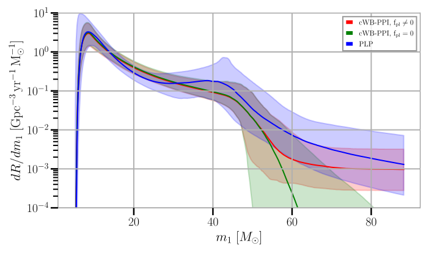
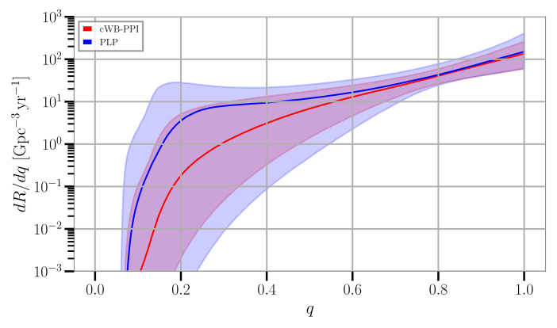
图注：本文两种模型的主星质量和质量比微分并合率分布，种群参数来自PopCWB分析。实线为中位数，阴影为90%可信区间。尽管质量分布细节略有差异，两种模型在误差范围内总体相容，详见§III.2。主星质量分布中的绿色曲线是令$f_{pl}=0$、关闭非PPI贡献后的cWB-PPI微分并合率。
怎么看这张图：两面板分别看主星质量与质量比；宽误差区说明高质量及质量比仍有退化。绿色曲线是人为去掉额外形成通道的对照，不是独立样本。 展示种群结构及不确定性。
来源与置信度：arXiv HTML；source verified；https://arxiv.org/html/2610.03459v1/PopcWB_model_compare_m1_Ms.svg；https://arxiv.org/html/2610.03459v1/PopcWB_model_compare_q_Ms.svg
5. Learning Approximate Isometric Embeddings for Efficient Template Placement
- 来源：arXiv / astro-ph.HE
- 链接：https://arxiv.org/abs/2610.02448
- 作者：Alexandra Wernersson, Jessica Irwin, Melissa Lopez, Sarah Caudill
- 公告 / 来源日期：2026-10-05
- 阅读层级：相关简报
- 评分：novelty 8/10，importance 7/10，relevance 9/10，final 9.00/10
- 推荐理由：近等距流降低模板数且用独立精确匹配注入验覆盖，有明确检索效率贡献；局限特定五维波形空间。
中文题目：isobank以近似等距变换减少偏心引力波模板数量
问题、方法与结论：引力波模板库需要覆盖弯曲的波形参数空间，反复计算相似度十分昂贵。作者训练可逆正规化流，把放置模板所需尺度上的物理距离近似变成欧氏距离，再用近邻查询筛选模板。在指定五维偏心双星空间、O3噪声谱及一万次均匀参数注入下，227万模板在拟合因子不低于0.97时覆盖96.6±0.2%，比mbank少约23%模板，后者覆盖94.2±0.2%。
意义与贡献：贡献在于学习距离而不只是学习模板密度，使昂贵波形计算主要移到预处理。覆盖率通过独立注入的真实波形匹配验证，证据比仅展示潜空间几何更直接。
可借鉴之处：值得借鉴的是围绕实际判定阈值训练，并对困难边界额外采样；停止时的估计未覆盖体积只作计算准则，最终仍需独立验证。三维对照中两方法表现接近，收益不是所有维数都相同。
局限与关注点：同维变换不能将一般曲流形全局精确展平；96.6%是所选注入分布下的覆盖率，不是探测率提升。低啁啾质量区覆盖降到约91%，需检查局部缺口。不同噪声谱或包含额外取向的旧模板库不能直接作同条件性能比较。
图3
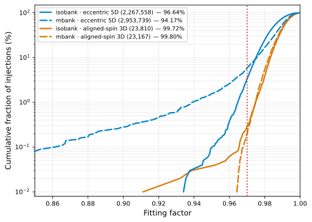
图注：采用O3噪声功率谱，在三维同向自旋空间（橙色）及五维偏心空间（蓝色），用isobank（实线）和mbank（虚线）模板库恢复每个空间$10^4$次注入的拟合因子累积分布。红点线标FF=0.97，各曲线在此处的高度为未恢复注入比例。图例列出模板数和覆盖百分比。曲线直到接近FF=1仍保持低值表示覆盖良好；向低FF延伸的长尾显示模板匹配较差的区域。
怎么看这张图：关注蓝色两线在0.97处的高度和图例中的模板数量，而非把横轴误差直接当检出显著性。三维橙色对照并没有同样明显收益。 独立真实波形注入检验。
来源与置信度：arXiv HTML；source verified；https://arxiv.org/html/2610.02448v1/ff_cdf_isobank_vs_mbank.svg
6. The 2015-2017 Large EVPA Rotation in OJ 287: Dominant Propagating Component in a Helical Magnetic Field with Time-Dependent Viewing Geometry
- 来源：arXiv / astro-ph.HE
- 链接：https://arxiv.org/abs/2610.03044
- 作者：Wanchaloem Khwammai, Minchul Kam, Motoki Kino, Sascha Trippe, Hiroshi Nagai, Seiji Kameno, Ilje Cho, Ioannis Myserlis
- 公告 / 来源日期：2026-10-05
- 阅读层级：相关简报
- 评分：novelty 7/10，importance 7/10，relevance 9/10，final 8.70/10
- 推荐理由：偏振角旋转与多普勒因子比较有参考价值，几何解释仍非唯一，未达精读贡献门槛。
中文题目：OJ 287偏振大旋转支持传播扰动，但并未唯一确定喷流几何
问题、方法与结论：作者结合2012—2023年KVN、ALMA、Metsähovi射电观测及已有光学偏振资料，重新研究2015—2017年超过300°的电矢量位置角旋转。旋转期射电耀发依次增强，但91.5 GHz光变拟合得到的多普勒因子约8—11，没有单调上升趋势。结合甚长基线干涉观测中亮区向下游迁移，作者倾向于一个暂时主导偏振的扰动依次经过驻定结构，并受螺旋磁场和变化视角共同影响。
意义与贡献：新增价值是用耀发、偏振、法拉第旋转量与空间结构相互约束，说明仅靠不断增强的相对论束射较难解释耀发包络。事件本身已有报道，许多观测也与前作重叠，不能算独立发现。
可借鉴之处：可借鉴的是在斯托克斯Q—U平面检查移动与驻定偏振分量的矢量叠加，并用同一频率的耀发时标检验几何解释。多普勒因子依赖固定内禀亮温，只作相对一致性诊断。
局限与关注点：偏振角有180°歧义，低偏振和采样空隙使部分旋转路径不唯一；两次正旋转量仅约2σ，尚未建立符号反转。本文没有对湍流模型作完整排除，也未测定进动周期或确认双黑洞；这些仍是解释选项。
图4
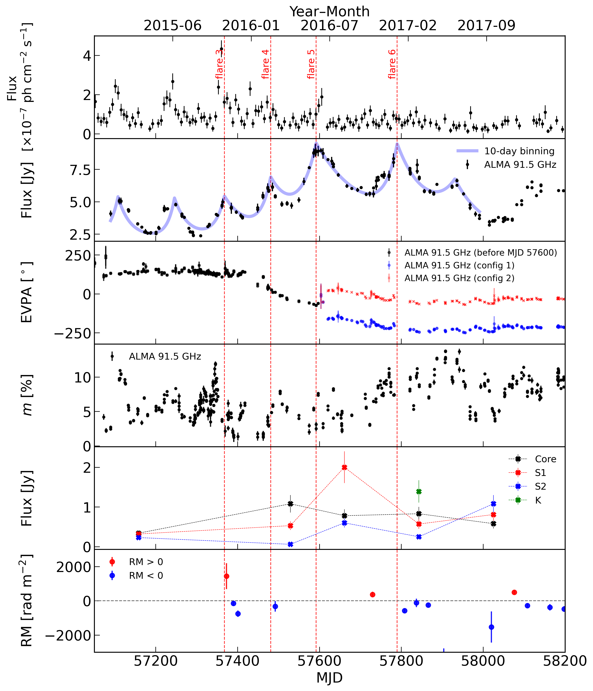
图注：2015年3月至2018年3月的多波段光变、电矢量位置角和偏振度。顶图按3天分箱的伽马流量来自Fermi LAT光变资料库。第二幅图的蓝线为按10天分箱的91.5 GHz流量最佳拟合模型。红色竖虚线标记第二时期的耀发峰。底图各喷流组分光变取自Lico等（原文参考文献47）。
怎么看这张图：按竖线对照不同观测量的时序，但不把同现当作严格的单一机制证明。光学与射电角度在稀疏区存在180°展开歧义，部分空间组分资料来自已有工作。原图共六行：喷流组分流量在倒数第二行，最后一行是旋转量RM；原图注的“底图”称法不精确。 将耀发、偏振和传播证据放在同一时间轴。
来源与置信度：arXiv HTML；source verified；https://arxiv.org/html/2610.03044v1/multiband.png
7. Neutrino flavor instabilities intermediate between slow and fast
- 来源：arXiv / astro-ph.HE
- 链接：https://arxiv.org/abs/2610.02332
- 作者：Nicolas Viaux, Lucas Johns
- 公告 / 来源日期：2026-10-05
- 阅读层级：相关简报
- 评分：novelty 7/10，importance 7/10，relevance 8/10，final 8.35/10
- 推荐理由：混合味不稳定性相图连接理想极限，适合简报；尚无真实输运与可观测预言，不能升为重大突破。
中文题目：中微子味不稳定性在慢、快极限之间怎样过渡
问题、方法与结论：致密中微子气体中的集体味转换，常分别在保留真空振荡或忽略真空项的极限研究。作者对两味平均场量子动力学方程作线性稳定性分析，同时改变角分布与真空频率相对自相互作用的强弱，并用两类分布检查。有限真空项下，没有角向电子轻子数交叉的模型也可不稳定；最快增长模可从近均匀模式转到有限波数的味波。
意义与贡献：这提示输运模型不能只以纯快极限的角交叉诊断替代一般稳定性判断。所谓快模的关键是去掉真空频率后增长仍存在；波数正负并不直接划分快慢，也不等同传播方向。
可借鉴之处：作者用相互作用核的低秩结构，把线性问题化为二维行列式求根，再分别比较最大增长率与最快模波数。一维周期盒的四组非线性演化提供了饱和后空间结构的有限检验。
局限与关注点：计算关闭物质势与碰撞项，采用两味、特定分布及有限网格；非线性仅选四个点，没有遍历过渡区域。图中灰区含数值可信阈值以下的增长，不能作严格稳定证明；线性增长率也不是最终转换比例，更不是可直接预测的地球中微子流量。
图2
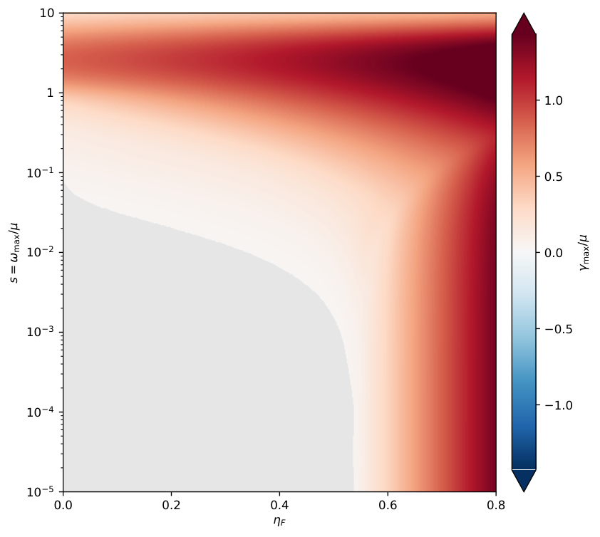
图注：斜坡分布族中原文式13的最大增长率$\gamma_{\max}/\mu$，角和能量网格数均为256。横纵坐标$(\eta_F,s)$分别为式15、18中的角分布与真空频率控制量。灰色为数值下限区，$\gamma_{\max}/\mu<0.02$。当$\eta_F\lesssim8/15$时，大s下的增长模随s趋零消失；当$\eta_F\gtrsim8/15$时，增长一直延伸至图底。
怎么看这张图：比较同一角参数向下走是否仍增长，才是快极限诊断。色值是以自相互作用强度归一化的速率，不是最终味转换幅度；灰区不能等同数学上绝对稳定。 核心二维混合极限图。
来源与置信度：arXiv HTML；source verified；https://arxiv.org/html/2610.02332v1/fig_gmax_etaF_s_Nv256_nw256_nlpts.png
8. A Refined Analytic Oblate--Schwarzschild Model for Thermal X-Ray Pulse Profiles of Rotating Neutron Stars
- 来源：arXiv / astro-ph.HE
- 链接：https://arxiv.org/abs/2610.02653
- 作者：Xi Yang, Tong Zhao, Renxin Xu
- 公告 / 来源日期：2026-10-05
- 阅读层级：相关简报
- 评分：novelty 7/10，importance 7/10，relevance 8/10，final 8.35/10
- 推荐理由：解析OS轮廓改进具效率价值，但仅选定300Hz两热点配置，尚无质量半径偏差检验。
中文题目：解析扁球中子星脉冲模型在选定几何下改善到约2%流量差
问题、方法与结论：作者在史瓦西外部时空中放入扁球表面，结合光线弯曲、透镜雅可比、多普勒效应和传播时延，计算热X射线脉冲。对一个300 Hz双热点几何及三种扁率设定，相对二阶Hartle–Thorne光线追迹，解析模型的流量均方根差为1.76%—1.98%；球形加多普勒模型则为6.50%—21.39%。误差均按参考模型的相位平均流量归一化，并未重新调幅或调相。
意义与贡献：结果把表面变形与旋转时空修正分开：在所选条件下，先正确处理表面法线、面积和可见性，比增加较小外部时空修正更关键。它是计算近似的验证，不是新的中子星质量半径测量。
可借鉴之处：可借鉴的是让解析解与两种数值追迹使用同一表面和热点，并做网格收敛检查，避免把表面差异误归因于光子传播。可作为多次模型调用时的中间层。
局限与关注点：当前仅测试有限几何、各向同性黑体及300 Hz；不能把约2%推广为全参数误差，也不能直接换算半径偏差。初始向内光线尚缺全路径与表面再相交剔除；真实大气、数值旋转星时空和参数恢复测试仍待补。
图2
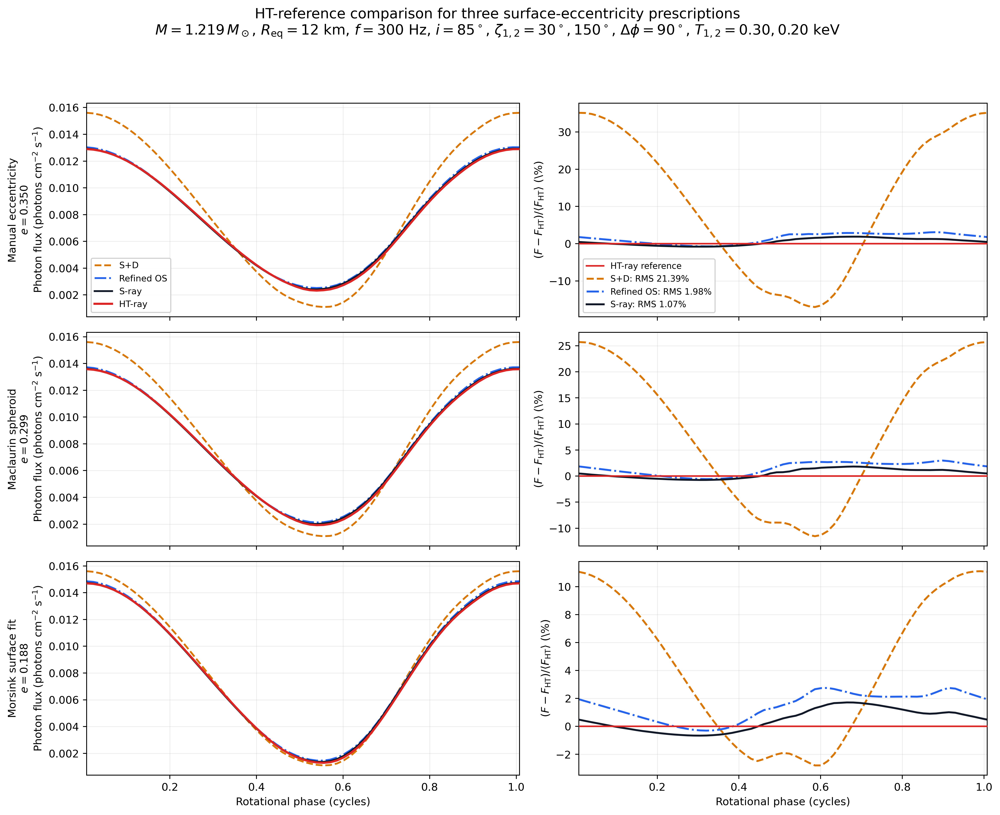
图注：手动指定、Maclaurin及Morsink三种表面偏心率方案的脉冲轮廓（左）和相对Hartle–Thorne光线追迹HT-ray的残差（右）。各曲线分别为球形加多普勒S+D、改进的扁球史瓦西OS解析模型、史瓦西光线追迹S-ray与HT-ray。
怎么看这张图：残差按相位平均参考流量归一化，不能读成低流量相位的相对百分误差。三种表面扁率下OS均改善，但这里只是选定双热点几何的比较。 同一几何下隔离表面和光子传播误差。
来源与置信度：arXiv HTML；source verified；https://arxiv.org/html/2610.02653v1/F2.png
9. Twins in the Shadow: Phase Transitions in Proto-Neutron Stars
- 来源：arXiv / astro-ph.HE
- 链接：https://arxiv.org/abs/2610.03148
- 作者：Jannik Milthaler, Jan-Erik Christian, Pia Jakobus, Stephan Rosswog
- 公告 / 来源日期：2026-10-05
- 阅读层级：相关简报
- 评分：novelty 7/10，importance 7/10，relevance 8/10，final 8.35/10
- 推荐理由：恒重子质量冷却对双星支占据给出限制，但强依赖参数化EOS和准静态路径。
中文题目：质量半径曲线上的双生星，未必能由原中子星冷却形成
问题、方法与结论：强一阶相变可在静态质量半径曲线上产生同引力质量、不同半径的双生中子星。作者用参数化强子—夸克状态方程，沿固定重子质量、逐渐降熵的静力平衡序列追踪冷却。在这套设定中，只要同重子质量的稳定强子星仍存在，许多混合星分支就难以由该路径到达；高相变压力下，整段数学稳定分支可能缺少形成路径。
意义与贡献：论文区分了“平衡解存在”和“天体实际能形成”，为用双生星检验致密物质相变加入演化约束。重子质量与含引力束缚能的观测质量不同，所以不可达的重子双生关系并不排除所有引力质量双生星。
可借鉴之处：可借鉴的是先沿守恒量追踪历史，再讨论最终静态参数空间。作者分别绘制两种质量随熵的范围，清楚显示冷却轨道何时转入混合分支或失稳。
局限与关注点：这是准静态序列，不能给出冷却各步所需时间。均匀熵、固定电荷份额、无吸积及快速相转换是重要假设，夸克声速也固定在因果极限；慢转换、真实退轻子化和动态坍缩可能改变可达范围。结果不是观测上排除了相变或双生星。
图9
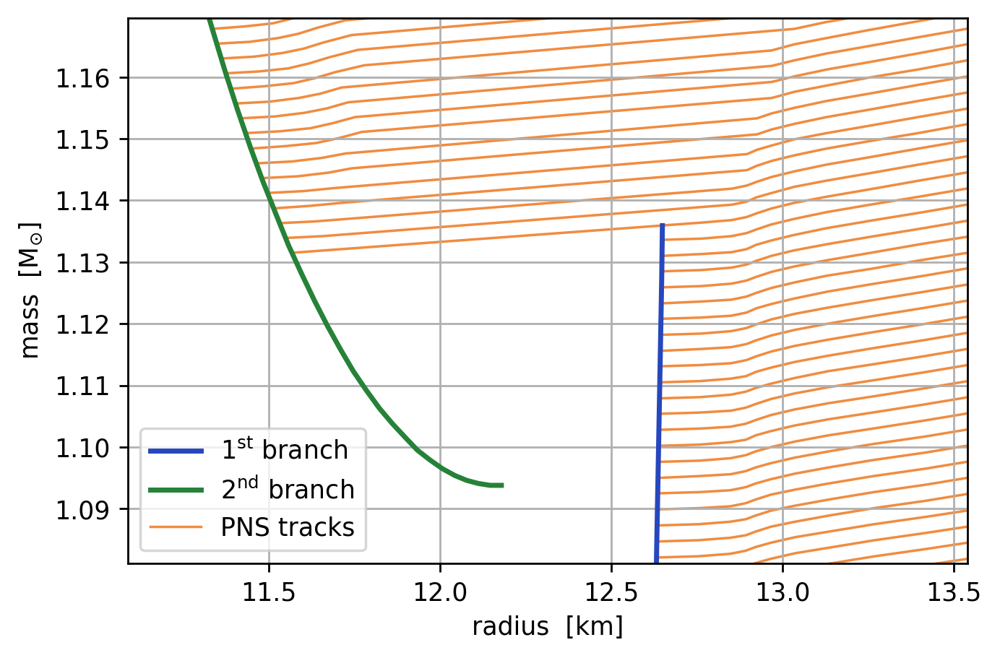
图注：相变压力$p_{\rm trans}=36$ MeV/fm³、能量密度跃变$\Delta\varepsilon=340$ MeV/fm³时，放大双生星区域的质量半径关系。橙线为不同重子质量的原中子星演化轨道。第二分支上的重子双生星位于第一分支的“阴影”中，没有任何这些轨道到达。
怎么看这张图：空着的稳定分支是这套形成路径不可达，不是数学解失稳或天文观测已排除。跟随一条固定重子质量轨道，能看清引力质量为何随冷却改变。 直观展示存在与可形成的差别。
来源与置信度：arXiv HTML；source verified；https://arxiv.org/html/2610.03148v1/twins_in_shadow_example_v2.png
10. Mesoscale Turbulence in Type Ia Supernova Deflagrations II. Evidence for Fuel Preheat Due to Flame Thermal Expansion from Lagrangian Analysis
- 来源：arXiv / astro-ph.HE
- 链接：https://arxiv.org/abs/2610.02677
- 作者：Ryan Learn, Andrey Zhiglo, Tomasz Plewa
- 公告 / 来源日期：2026-10-05
- 阅读层级：相关简报
- 评分：novelty 7/10，importance 7/10，relevance 8/10，final 8.35/10
- 推荐理由：拉格朗日分析解释预热两步机制，但关闭燃烧，不能据此证明次级点火或爆燃转爆轰。
中文题目：Ia超新星火焰前燃料的预热：点火时标缩短尚不等于点火
问题、方法与结论：作者在三组密度的Ia超新星瑞利—泰勒不稳定火焰模拟中追踪燃料热力学历史。靠近火焰、可靠分辨的区域温度相对参考值提高约13%—63%，估计碳点火时间缩短约0.9—3.6个数量级。强预热粒子经历近等压膨胀；作者提出火焰膨胀先扰动静力平衡，弱声波恢复压力时重新分配简并与热能，温度对简并度的敏感响应再放大点火时标变化。
意义与贡献：该解释用拉格朗日历史修订了前作仅凭瞬时速度场提出的压缩加热图像。它指出中尺度火焰与燃料相互作用可能为小尺度燃烧提供不同初态，而不是证明一种新的爆轰触发机制。
可借鉴之处：方法价值在于加入未按加热结果筛选的对照粒子、检验热力学第一定律闭合，并用固定温度或密度重算点火时标，定位主导因素。选出加热最强的500粒子有助于看机制，却不能代表整个燃料层。
局限与关注点：所分析燃料关闭核燃烧，没有实际点火或爆轰；点火时间缩短至少十倍的粒子仅约0.91%、4.7%、8.8%。拟合斜率依赖距离窗口，误差未包办时间相关与分辨率系统误差。一维封闭声学实验只检验定性响应，下一步须开启燃烧并解析更小尺度。
图2
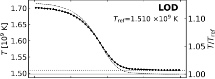
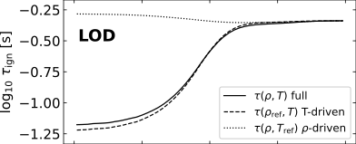
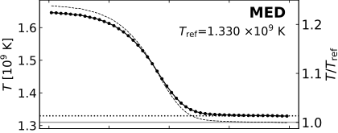
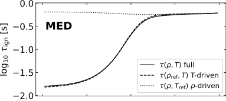
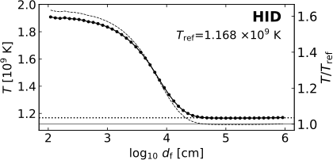
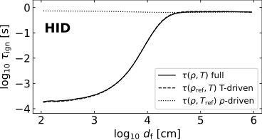
图注：低、中、高密度模型（LOD、MED、HID，依次从上至下）的燃料温度—火焰距离关系及点火时标一致性检验，使用与图1相同的粒子集合及距离分箱。左列：带符号实线为分箱平均温度T，水平点线为各图标出的未扰动参考温度$T_{\rm ref}$；虚线按右轴给出比值$T/T_{\rm ref}$，细水平实线标1。右列：按式1用测得的密度、温度、碳丰度计算的$\log_{10}\tau_{\rm ign}$（实线）；使用实测温度但固定参考密度（虚线）；使用实测密度但固定参考温度（点线）。实线与虚线近重合、点线近乎平坦，表明温升可解释点火时标的缩短，详见正文。
怎么看这张图：固定一个变量再计算的对照比单纯相关图更清楚地定位温度作用。纵轴点火时间是热力学估算量；这些燃料没有在模拟中实际点燃。 直接分离温度与密度对点火时标的贡献。
来源与置信度：arXiv HTML；source verified；https://arxiv.org/html/2610.02677v1/Figure3_TopLeft.svg；https://arxiv.org/html/2610.02677v1/Figure3_TopRight.svg；https://arxiv.org/html/2610.02677v1/Figure3_MiddleLeft.svg；https://arxiv.org/html/2610.02677v1/Figure3_MiddleRight.svg；https://arxiv.org/html/2610.02677v1/Figure3_BottomLeft.svg；https://arxiv.org/html/2610.02677v1/Figure3_BottomRight.svg
11. Robust Bayesian non-linear pulsar timing and noise analysis using a sequential data-tempered ensemble sampler
- 来源：arXiv / astro-ph.HE
- 链接：https://arxiv.org/abs/2610.02737
- 作者：Abhimanyu Susobhanan
- 公告 / 来源日期：2026-10-05
- 阅读层级：相关简报
- 评分：novelty 7/10，importance 7/10，relevance 8/10，final 8.35/10
- 推荐理由：数据退火MCMC改善初始化有用，目前仅一颗脉冲星示范，未显示足够广泛基准优势。
中文题目：逐步增加数据量，为非线性脉冲星计时采样预热
问题、方法与结论：作者提出以数据量代替似然温度的顺序集合马尔可夫链方法：先用小数据集和较低秩噪声模型寻找较宽后验，再逐步加入数据，最终仅使用完整数据、完整模型的最后一轮作推断。在B1855+09的6464个到达时刻示例中，共23级、130条链，8核CPU约28分钟，其中约三分之二用于最终目标分布采样。
意义与贡献：优势是早期较易探索的分布也更便宜；传统把完整似然升温通常不减少单次似然计算成本。文章展示了一条实用初始化路径，并未通过广泛基准证明普适加速倍数。
可借鉴之处：值得借鉴的是每级保证各观测系统仍有最少数据、适当降低相关噪声秩，并从前一级去除预热后的样本中抽取新起点。较早链不能混入最终参数后验，以免改变统计目标。
局限与关注点：示例起点混合了已知最大似然值，若干先验也围绕已有估计，不能称完全盲起步。结果仅演示单颗脉冲星；白化残差检验p=0.24不证明全局采样收敛。阵列引力波背景受跨星相关矩阵主导，需重新设计按脉冲星选子集的策略。
图1
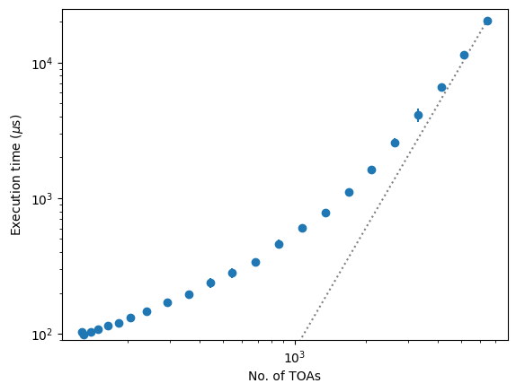
图注：后验分布单次求值耗时随到达时刻数n的变化。点线给出与n³成正比的函数。小数据子集明显偏离渐近的三次计算复杂度关系。
怎么看这张图：早期子集计算便宜是该预热策略的基础，但这张图只比较单次求值成本，不能代替端到端有效独立样本的速度比较。 以最简图展示可核验的计算优势。
来源与置信度：arXiv HTML；source verified；https://arxiv.org/html/2610.02737v1/execution_time.png
说明
评分由 LLM 给出初评，再由本地阈值策略过滤；IACT、TeV 伽马射线和高能中微子天文学按重点方向处理。